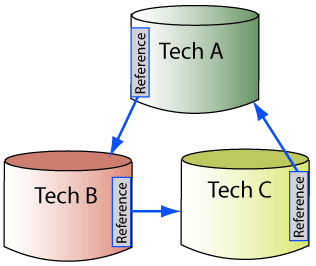
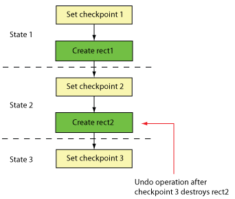
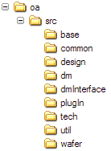

|
 |
 |
||||||
|
|
|
||||||
The current oacDataModelRevNumber remains 3.
The oacAPIMinorRevNumber remains 34.
Refer to Compatibility for OpenAccess Applications and Data for more information about oacDataModelRevNumber and oacAPIMinorRevNumber changes.
There are no API changes in this release.
| ITS | Issue |
| Some editing scenarios can result in an oaModBusNetDef that is not reflected into the block domain, which prevents the creation of oaModBusNets that are visible to the block. | |
If there are many terminals on a master, the oaInstTerm::find(inst, term) function can return a pointer for an oaInstTerm that was previously deleted. |
|
| OpenAccess defragments some designs unnecessarily. | |
| If your design contains a multi-bit oaInstTerm with one or more bits connected to explicit bit nets that are connected to other oaInstTerms, an edit such as removing the multi-bit oaInstTerm from its net causes a crash. | |
| Failed attempts to create oaBundleNets leave corrupted data in the design. | |
| ITS980 | Problem in defragment for oaOccHeaderTbl. |
A segmentation fault occurs during oa20to22 conversion if the design includes unbound oaTextDisplays. |
|
| After editing a large design multiple times, destroying constraint groups can have poor performance. | |
| When two routes share the same Steiner connection, deleting one route and then the Steiner results in a crash when accessing the connection objects of the other route. | |
| When two routes share the same Steiner connection, deleting one route removes the Steiner from the other route as well. | |
The oa2lef translator omits geometry in routes containing guides. |
|
The oa2def translator hangs in the p056 release. |
|
The |
|
| The oaNet::isOriginal() function returns an incorrect answer after defragmentation. | |
The lef2oa translator does not correctly handle multiple LENGTHTHRESHOLD rules applied to the same RANGE. |
|
The supplySensitivity and groundSensitivity attributes of a terminal cause a crash (due to a corruption caused by a bug in defragmentation). |
|
| Single-bit connectivity can become inconsistent with its corresponding multi-bit connectivity (specifically, this type of inconsistency has been found between the multi-bit oaInstTerms on oaVectorInsts and the implicit single-bit oaInstTerms on the corresponding oaVectorInstBits). | |
The strm2oa translator creates offgrid results if the DBUPerUU specified in the Stream file and the technology database are different. |
|
| Renaming or creating a single-bit vector instance does not work in some cases. | |
The oa2def translator should truncate property values longer than 2048 characters. |
|
| Creating an explicit global member net does not propagate the global state to the occurrence domain. | |
| An oaTextDisplay associated with an oaAssignment on an oaInst (when present in a group for which the oaInst is the leader) is copied when the oaInst is copied, but the oaTextDisplay continues to point to the old oaAssignment. | |
| ITS892 | Problem with bundleNet bitNets after a uniquify operation. |
| The oaVectorInstBit::find function fails to find single oaVectorInstBits. | |
| ITS925, ITS958 | An invalid oaScalarTerm results from calling oaModule::embed. |
| ITS925 | When implicit nets at the top level are connected to explicit nets in the embedded design, the oaModule::embed function causes unexpected connectivity. |
| ITS964 | The oaOccNet::isGlobal function returns true for a local occNet. |
The oa20to22 translator fails on a corner case related to a particular kind of input data. |
|
| OpenAccess should throw an exception instead of crashing when corrupted mustJoin data is encountered. |
Some parts of this release are still in development and are considered to be of Beta quality. They are subject to changes in their use and interface. This includes:
This release includes partial support for LEF and DEF 5.7 constructs.
The oaPcellScript Plug-In is in development and is not ready for use at this time.
The current oacDataModelRevNumber remains 3.
The oacAPIMinorRevNumber remains 34.
Refer to Compatibility for OpenAccess Applications and Data for more information about oacDataModelRevNumber and oacAPIMinorRevNumber changes.
The oaRegionQuery::getCurrentRegion() function has been updated. In previous versions, the returned bBox was based on the specified query region and the current transform. It is now based on the intersection of the specified query region and an instance box in the hierarchy.
For example, assume an instance lies completely within the query region. When the query is producing objects in the master, the master's bBox is used as the current region.
Derived translators that use the LefDefIn::checkValidDB function (and related setValue functions), must now pass in a message string to indicate what is being modified. This message string is used only in the error messages that are output when the technology database is not writable or is not the most derived technology database.
The DefOutOptions class has a new checkCellType option. When set to true, only instances for which the master design has an oaCellType other than oacNoCellType or oacViaCellType are output to the DEF file.
If you need to build the LEF/DEF translators (which is optional), the lefdef05.70-s001 (or later) kits are now required.
There are no API changes in this release.
| ITS | Issue |
The oa2strm translator writes variable paths for version 3 incorrectly. |
|
The oa2def translator should truncate a property after 2048 characters. |
|
When using the OpenAccess LEF translators to perform a round trip on data with LEF57 properties, information is lost if incremental technology databases were used. |
|
| When the region query boundary approaches the maximum integer, shapes in the deeper level designs are omitted. | |
Comments are not preserved in the lib.defs file. |
|
The spef2oa translator crashes when attempting to print a syntax error. |
|
The oa2lef translator might output mustJoins inconsistently (depending on the order in which terms are defined as mustJoins). |
|
The lef2oa translator does not translate ENDOFLINE rules correctly. |
|
The lef2oa translator, when used with -dataModel2, should ignore the entire CENTERTOCENTER rule. |
|
The def2oa translator should issue warnings for zero-length paths. |
|
When the def2oa translator drops a shape (because its width is not even), the warning message should contain the coordinate of the first point of the illegal shape. |
|
| OpenAccess Tcl bindings: TCL PCell unit test crashes in standalone mode. | |
| ITS875 | oaAppDefs on paged objects are removed when the design is saved. |
Allow copy and move of Vias and Rows if the associated technology object is the same. (Note that there are some restrictions for these operations. Refer to the oaFig descriptions of the copy and move functions for details.) |
|
Update the def2oa translator to use the default constraintGroup for TAPER/TAPERRULE. |
|
The lef2oa translator should issue a warning for MINIMUMCUT rules on TYPE VIA layers. |
|
| If you perform an undo operation after deleting a Pcell, OpenAccess crashes. | |
| Editing parasitics on machines with different endian architectures can cause parasitic data corruption. | |
| A shape query does not produce the shapes from the via masters of some vias. | |
| For the cut layer, the cumulative bBox for a via with an odd width or height is off by 1 DBU. | |
The oa2strm translator should support -ver 6. |
Some parts of this release are still in development and are considered to be of Beta quality. They are subject to changes in their use and interface. This includes:
This release includes partial support for LEF and DEF 5.7 constructs.
The oaPcellScript Plug-In is in development and is not ready for use at this time.
Note: Version 2.2.6-p052 includes all changes that occurred after 2.2.6, including changes outlined in the P045 and P049 source code and documentation release notes.
The current oacDataModelRevNumber remains 3.
New functions were added to this release, so the oacAPIMinorRevNumber was incremented to 34.
Refer to Compatibility for OpenAccess Applications and Data for more information about oacDataModelRevNumber and oacAPIMinorRevNumber changes.
Applications compiled with oaTcl header files prior to 2.2.6-p052 need to be recompiled with release 2.2.6-p052 or later. For more information, refer to Limitations in Tcl Bindings for the OpenAccess API for more information.
The lef2oa and oa2lef translators now partially support LEF 5.7. Any LEF 5.7 constructs that have corresponding OpenAccess built-in constraints are mapped to those constraints. LEF 5.7 constructs that do not currently map to built-in constraints result in warnings in the translators. Refer to the LEF/DEF to OpenAccess Mapping documentation for information mapped constructs.
The lef2oa translator determines the LEF version based on the input file. The oa2lef translator has a -ver option for specifying the output version.
The mapping for the LEF LAYER SPACING attribute with two RANGE keywords has been fixed to also incorporate values from the SPACING attribute with a single RANGE keyword.
Derived translators can use StrmOut::getTextNS to access the translator namespace in order to write additional labels. Also, functions were added to oaStrm to allow the manipulation of text and statistics.
The Itanium Linux platform (AS 2.1) is no longer supported.
You can now use Microsoft Visual Studio 2005 as well Visual Studio .NET 2003 to compile your environment on Windows. The OpenAccess solution files for Visual Studio 2005 have a _vc8 extension in their name. For example:
Refer to Optionally Compiling on the Windows Platform for more information.
If you need to build the LEF/DEF translators (which is optional), the lefdef5.7 (or later) kits are now required.
There are no API changes in this release.
| Si2 ITS | Issue |
| A crash occurs when you remove a leader from an oaFigGroup. | |
| ITS922 | If you scale the width of an oaPathSeg, OpenAccess does not round the width correctly, which can cause an oacEvenWidthRequiredForSegStyle exception. |
The oa2lef translator should not output VIAs or VIARULEs with implant layers as their primary or secondary routing layer. |
|
If a MACRO is defined multiple times, the lef2oa translator should give a warning, ignore the new geometry, and continue saving
the data. |
|
The lef2oa and def2oa translators should default to a data model of one when the -dataModel argument is not specified. |
|
Enhance OpenAccess to preserve comments in lib.defs files. |
|
| The oaBundleName::append() function might crash after a call to the oaModBundleNet::getName() function. | |
| While a pCell oaInstHeader is being bound, a call to bind the same header should be ignored. | |
| OpenAccess should check for a top block on the oaRefHeaders in the used-in lists before promoting (or removing) any LPP or layer headers. | |
| ITS895 | After performing an oaModule::detach operation, there are extraneous oaBusTermDefs and oaBusNetDefs in the module. |
| Improve error message for invalid object types. | |
| ITS862 | Clarify documentation about the hierarchy delimiter for the cdba namespace. |
The oa2def translator crashes when the database contains an oaRoute that is not assigned to a net. |
|
The oa2lef translator should not omit the MANUFACTURINGGRID. |
|
A database created by the lef2oa or def2oa translator on a Linux platform crashes in oaSiteDef when read in on a Sun platform. |
|
| If you move a shape from one route to another several times, then perform an undo operation, the route-net-shape data might be corrupted. | |
| OpenAccess does not remove all the read-caches of database files if the owning process exits without performing a database close or purge operation. | |
| A crash occurs in oaDMFileSys::oaDMFileSysComp::isCacheFile on exiting. | |
The OpenAccess sysname script does not recognize sun4us. |
Some parts of this release are still in development and are considered to be of Beta quality. They are subject to changes in their use and interface. This includes:
This release includes partial support for LEF and DEF 5.7 constructs.
The oaPcellScript Plug-In is in development and is not ready for use at this time.
Some parts of this release are still in development and are considered to be of Beta quality. They are subject to changes in their use and interface. This includes:
The oaPcellScript Plug-In is in development and is not ready for use at this time.
The current oacDataModelRevNumber is 3.
New functions were added to this release, so the oacAPIMinorRevNumber was incremented to 33. Programs compiled with the header files in the P048 release or later cannot be used with OpenAccess shared libraries from versions prior to P048. Programs compiled with versions prior to P048 will continue to run unchanged with the shared libraries produced from the current release.
Refer to Compatibility for OpenAccess Applications and Data for more information. In addition, refer to the Features by Data Model for a list of the features included in each version of OpenAccess.
Persistent application-defined data (oaAppDef data) created using versions of OpenAccess between 2.2.3 and P048 (inclusive) might be corrupted. The OpenAccess P049 release contains code to automatically repair the corruption in most cases.
In the problematic window (between 2.2.3 and P048 inclusive), an application reading an OpenAccess database using OpenAccess shared libraries that were newer than the OpenAccess shared libraries used to create the database could crash when performing the following actions:
This issue was more prevalent in oaTech databases.
Note: Even though the P049 release contains code to repair the corruption, there are rare cases in which the repair process fails. If the database cannot be repaired, and the repair process failed on oaAppDef data that the application explicitly registered, an oacCannotRepairCorruptedAppData exception is thrown when the database is opened (regardless of mode). Because any application can use oaAppDefs to define persistent application-specific data, the exception is not thrown unless the application reading the database explicitly registered an oaAppObjectDef for an oaAppObject that contains un-repairable oaAppData. This means that applications can still read the database, even if some portions of it are not repairable, if they do not attempt to access the un-repairable portions.
In previous releases, OpenAccess reported a conflict if the default value of a technology attribute, such as DBUPerUU, conflicted with a user-specified value for the same technology attribute in a graph of incremental technology databases. Now OpenAccess can distinguish between explicitly set values and implicitly assigned default values. In a graph of technology databases, an explicitly set attribute value takes precedence over any implicitly assigned value, and there is not a conflict if they differ.
For more information, refer to Technology Database Attributes in the Programmers Guide.
In previous releases, it was possible to create a circular set of technology database references with oaTech::setRefs. For example:

An oacTechSetRefsCircularReference exception is now thrown if an application attempts to create a circular set of references.
Note: The oacTechCannotSetRefToSelf message ("Cannot set self as reference",) has been obsoleted because the functionality is now part of oacTechSetRefsCircularReference.
In previous releases, the oaObserver<oaTech>::onFirstOpen and oaObserver<oaTech>::onPostOpenRefs observers were invoked after checks for conflicts and for unbound technology database references. These two observers are now invoked before the checks. Accordingly, the oaObserver<oaTech>::onConflict and oaObserver<oaTech>::onUnboundRef observers now appear after the onFirstOpen and onPostOpenRefs observers.
In previous releases, the oaObserver<oaTech>::onPurge observer was invoked after the graph of incremental technology databases was destroyed. This observer is now invoked before the graph of incremental technology databases is destroyed. Accordingly, the onModify observers for the oacUnbind<objectHeader>ModType now appear before the onPurge observer notification.
The Turbo and FileSys DM systems have a new attribute that can be set on read-only reference libraries to indicate that OpenAccess can always perform partial reading of the data.
| "libReadOnly" |
Specifies whether or not applications can modify the library and its contents. This attribute can be set to "yes" to indicate that the library is a read-only reference library. If set to "yes", OpenAccess is always able to perform partial reading of the data, which can improve performance. If set to “no” (the default), and the library is being accessed across an NFS or AFS network, and the file system permissions prevent OpenAccess from modifying the library, OpenAccess will read database files completely into memory when they are first accessed. |
There are two new exceptions related to the new DM attribute:
Note: In previous releases, problems could occur when multiple users on NFS accessed the same libraries. Specifically, if a process partially read a file and left the file open, then another process wrote to that file, the reader would encounter problems on attempting to read the file again. This problem has been resolved.
Each OpenAccess translator has the following new options, which are made available by the wrapper scripts for the executables.
Option |
Description |
Notes |
|---|---|---|
-64 |
Selects the 64-bit version of the translator executable (if available). | Takes precedence over the <translator>_BIT and OA_BIT environment variables. |
-32 |
Selects the 32-bit version of the translator executable (if available). | |
-dbg |
Selects the debuggable version of the translator executable. | Takes precedence over the <translator>_MODE and OA_MODE environment variables. |
-opt |
Selects the optimized version of the translator executable. | |
-debug3264 |
Provides diagnostics about the executable in use based on the environment variables, command-line options, and which executables are available on the platform. | |
For more information, refer to Using OpenAccess Translators.
The oa2strm translator has new options for adding pin text (labels) to nets and terminals. In addition, there is a new option to specify the Stream format for the output file, and a new option that lets you convert path objects to polygons.
Option |
Description |
|---|---|
-labelMap |
Specifies a label map file that determines the object type for which labels are created and determines the mapping of shapes on an oaLayer and oaPurpose pair to a GDS layer and GDS data type pair. |
-labelDepth |
Specifies to what depth of the design hierarchy labels are generated. |
-pathToPolygon |
Specifies that oa2strm convert path objects to polygons and write them as boundary records. |
-ver |
Specifies the Stream format version for writing the Stream file. |
Refer to OpenAccess to Stream Translator (oa2strm) for more information about these options.
The lef2oa translator issues a warning and does not use the new attribute value if the manufacturing grid or clearance measure values in the file being imported are different than the values already in the database. In previous releases, an error message was issued.
The oa2verilog -tieLow and -tieHigh options now accept an asterisk (*) to map all tieLow or tieHigh global nets at once.
Option |
Description |
|---|---|
-tieLow * |
All global nets that are marked as oacTieLoSigType are mapped to 1'b0. |
-tieHigh * |
All global nets that are marked as oacTieHiSigType are mapped to 1'b1. |
The openTech function has been removed from LefIn because it was redundant with initTechDBLocal, which provides the same functionality.
If you need to build the LEF translators (which is optional), the lefdefInt05.60-s024 kits are now required.
Refer to the OpenAccess Installation and Configuration Notes for more information about building the translators.
The oaAnalysisPointArray class implements a utility array class used to pass an array of oaAnalysisPoint class pointers to the following function:
oaParasiticNetwork* oaParasiticNetwork::create(oaDesignObject* net,
const oaAnalysisPointArray& aps)
Note: The following function is considered deprecated:
oaParasiticNetwork* oaParasiticNetwork::create(oaDesignObject *net,
oaUInt4 numAPs,
oaAnalysisPoint **aps)
The oaBuildInfoArray class implements a utility array class used to pass an array of oaBuildInfo pointers back to the user with the following function:
void oaBuildInfo::getPackages(oaBuildInfoArray& packagesIn)
Note: The following function is considered deprecated:
oaBuildInfo** oaBuildInfo::getPackages()
The new oaMemoryError class contains information about the exception that OpenAccess throws when it detects that a process is out of memory when oaMemory::get() or oaMemory::resize() are called. This allows an application to print a more helpful message when this error occurs.
The implementation of const APIs that do not modify the database, such as oaInstTerm::getInst() and oaTech::getDBUPerUU(), has been modified to improve performance. The const APIs in the optimized shared libraries no longer validate their arguments (including the this pointer). The non-const APIs that do modify the database, such as oaInstTerm::create() and oaTech::setDBUPerUU(), continue to validate their arguments as before.
Both the const and non-const APIs continue to validate their arguments and throw exceptions when appropriate in the debuggable shared libraries. However, instead of throwing exceptions, these APIs will generate crashes when the optimized libraries are used.
Applications must not rely on OpenAccess to validate arguments in the const APIs. Application developers should develop and test their applications using the debuggable shared libraries, then use the optimized shared libraries when testing for release and when shipping.
The Tcl Bindings for the OpenAccess API document has been improved and includes new usage examples.
New oaTcl interfaces are provided for the following:
::oa::AnalysisPointArray ::oa::BuildInfoArray
The following oaTcl interfaces, which do not correspond to public OpenAccess APIs, have been removed.
::oa::BasePackedData |
::oa::VCMessageTypeEnum |
::oa::getSocketD |
| ::oa::ClientSocket |
::oa::VCOperation |
::oa::getSwap |
| ::oa::FDSet |
::oa::VCOperationEnum |
::oa::grid |
| ::oa::HierPathElement |
::oa::accept |
::oa::invalidate |
| ::oa::IEvalTextGetId |
::oa::acquire |
::oa::isAcquired |
| ::oa::IPcellGenGetId |
::oa::bind |
::oa::isMapped |
| ::oa::IPcellGetId |
::oa::calcDiskSize |
::oa::isPortNumAvailable |
| ::oa::ITextGetId |
::oa::closeWindows |
::oa::listen |
| ::oa::ITextInvalidateGetId |
::oa::connect |
::oa::onBind |
| ::oa::MapFile |
::oa::data |
::oa::onEval |
| ::oa::MapFileWindow |
::oa::extend |
::oa::onRead |
| ::oa::MapWindow |
::oa::genPcell |
::oa::onUnbind |
| ::oa::Mutex |
::oa::getBytes |
::oa::onWrite |
| ::oa::ServerSocket |
::oa::getFirstWindow |
::oa::readSwapCheck |
| ::oa::Socket |
::oa::getLoc |
::oa::select |
| ::oa::SocketClose |
::oa::getMapFile |
::oa::setAddress |
| ::oa::SocketGetHostName |
::oa::getMappableSize |
::oa::setMapFile |
| ::oa::SocketRecvMsg |
::oa::getNextReady |
::oa::setPort |
| ::oa::SocketSendMsg |
::oa::getOffset |
::oa::setSwap |
::oa::VCMessageType |
::oa::getPort |
::oa::unmap |
::oa::writeSwapCheck
|
The OpenAccess programming examples in <install_dir>/examples/oa have been improved. Each example directory now contains a run script, which creates any demo data (if needed), and runs the example. Each example directory also includes a log.ref file that contains the expected output.
For more information, refer to API Programming Examples.
The error and warning messages for the SPEF, Stream, and Verilog translators have been improved. Errors messages now help identify the cause of an error and suggest a corrective action. All messages are output with a unique alphanumeric prefix to ensure an unambiguous reference.
Note: Error and warning messages for the LEF/DEF translators were improved in a previous release.
View a summary of the OpenAccess P049 source code and documentation release changes with respect to the P045 source code and documentation release.
| Si2 ITS | Issue |
| If you open a database, add a shape, and then save the database, you get a crash. | |
| Cannot create a via that binds to a different oaViaDef master after re-attaching to a library with a standalone technology database. | |
| Databases with oaAppObjects and oaInterPointerAppDefs written by one version of OpenAccess and read by another version of OpenAccess prior to the p049 release can be in a corrupted state. | |
| If you call oaTech::attach(designLib, techLib) on an incremental technology database, you cannot access the data from the reference libraries for the technology database immediately following the call. | |
| An oaAttrDisplay object on an oaDesign refers to an invalid object. | |
| The oaIter<oaLayerConstraint>, oaIter<oaLayerPairConstraint>, oaIter<oaLayerArrayConstraint>, oaIter<oaConstraint>, and oaIter<oaSimpleConstraint> functions cannot handle a chain of more than four constraint groups from different databases. | |
| The oaTech::hasAttachment function leaves oaDMData objects open. | |
| Error occurs when reading oaPRBoundary data. | |
| ITS404 | The oaMemory::get() function does not always work correctly. |
| ITS824 | The spef2oa translator should support connection by terminal position |
| If there is a local technology database inside a a chain of technology database attachments, that local technology database should be favored over the attached technology database. | |
| The oaTech::attach function hangs. | |
| ITS769 | Tcl bindings: Bad reference count causes a crash. |
Tcl bindings: If a lib.defs file contains duplicate library definitions or duplicate INCLUDE lines, oa::LibDefListOpenLibs prints an error message, ignores the contents of the lib.defs file, and returns the status TCL_OK. |
|
| Tcl bindings: When creating user-defined functions, a compiler error occurs when compiling code that contains the namespace-qualified type, oa::oaBoolean. | |
| Tcl bindings: The oaTcl error messages should provide information about incorrect inputs, and the oa::help command should provide help about its usage. | |
Errors result if you run the def2oa translator on a library
that uses an attached technology database. |
|
The lef2oa -overwrite option works for designs, but not oaSiteDefs. |
|
| The LEF translators do not correctly handle inter-spacing statements. | |
The -overwrite option for the LEF and DEF translators does not work correctly. |
|
| ITS868 | In certain cases, the oaPolygon::isOrthogonal function incorrectly reports that a polygon is orthogonal. |
The strm2oa translator crashes if the input layer map file has conflicting information. |
|
| ITS857 | Calling oaPointArray::compress() on an array with no elements causes a crash. |
A crash occurs after reading a database in which many oaConstraintGroups were deleted. |
|
| After reading in a design in which many objects owning oaConstraintGroups were deleted, the database gets corrupted. | |
| The OpenAccess translators should provide command-line switches that choose between 32 and 64-bit versions, and between debug and optimized versions of the executables. | |
| A version of OpenAccess with the incremental technology database feature enabled incorrectly destroys oaViaDefs with implant layers when reading in older data. | |
| ITS790 | Using oaFig::copy on a leader creates a group with the same name, which should not be allowed. |
| When reopening a very large database that was generated on a different platform, a crash results. | |
| OpenAccess should prevent applications from saving data with a data model revision number that is higher than the application itself supports. | |
The oa2verilog translator should handle a design in which both the multi-bit and single-bit connectivity are explicitly expressed. |
|
| Queries should always return zero-sized objects. | |
| ITS690 | The oa2verilog translator should autodetect tie nets. |
| Binding is not handled correctly for conflicted headers when technology databases in a graph are opened or closed. | |
| The oaTech::detach function issued on a self-referencing attachment hangs. | |
| Destroying objects with oaConstraint Groups can be quadratic (performance issue). | |
| Setting the instance master causes a crash in oaTextDisplay if the instance master does not have any shapes or properties. | |
| Cannot call oa::ParasiticsNetworkCreate with multiple analysis points. | |
| OpenAccess should be able to handle more than 65535 open designs. | |
| OpenAccess should create a built-in constraint group with an auto-name when the technology database contains a regular constraint group with the reserved names foundry or default. | |
| When using a version of OpenAccess that supports incremental technology databases, deleting a layer from data that was generated in an earlier version of OpenAccess causes a crash. | |
| The oaModule::detach function crashes if the module being detached contains a block net that spans into lower occurrences of the sub-module hierarchy. | |
| The index for the foundry constraint group owner needs to be updated. | |
| Several ABRs when opening a schematic design. | |
| ITS858 | Need to clarify the oaInstHeader::get<object>Name documentation. |
The verilogAnnotate translator prints an incorrect message about refLibs. |
|
| The performance of oaRoute::destroy is poor on large designs. | |
When using oa2strm -ver 3, the output file should not have PATH records with the "variable" PATHTYPE. |
|
| Support dynamic page size for the first page in oaCommon::oaHashTblArray. | |
The oa2def translator does not handle row orientations correctly. |
|
When provided with a LEF file that contains an ENDOFLINE MinSpacing value, the lef2oa translator uses this value as the default MinSpacing value. |
|
| OpenAccess should favor explicitly set values over implicitly supplied default values in incremental technology databases. | |
| The oaRegionQuery::startRef function is called for array instances even when the master bBox is smaller than the specified filter size, which adversely affects performance. | |
OpenAccess translators write incorrect relative paths in the lib.defs file. |
|
| ITS847 | Deleting an oaModInst with a global net causes a crash. |
| The oaDesign::getTimeStamp function causes a crash. | |
| ITS832 | The oaDMTurbo system fails to start due to a port conflict. |
| The oaOccInstTerm::getTermName() function fails to throw the oacInstTermConnectsByPosition exception when appropriate. | |
| ITS846 | Clarify documentation of the oaModInstHeader::getMaster and getMasterModule functions. |
| The oaConstraint::find function does not search all referenced technology databases. | |
| If you redefine a via definition then create a new via with it, the created via is incorrect. | |
| Performance is poor when deleting oaSteiners from a design with numerous routes. | |
A missing guard statement (to prevent multiple inclusion) in the oaFigGroup.h file causes compilation errors. |
|
| ITS839 | The oaPointArray::compress function should resize the output array if needed. |
| ITS842 | OpenAccess should throw an exception instead of crashing if DMAttributes are specified using incorrect syntax. |
The def2oa translator does not create all row orientations correctly. |
|
The number of warnings produced on standard output conflicts with the number of warnings in the log files for the lef2oa/def2oa translators. |
|
The oa2def translator should output PlacementStatusNone pins as PLACED. |
|
| ITS818 | The via FILLWIRE property is lost when using the oa2def and def2oa translators. |
| If you create multiple MustJoin oaTerms and unset them one by one, the last call to oaBitTerm->unsetMustJoin() causes a crash. | |
The lef2oa translator should issue a warning when translating multiple files with different UNITS statements. |
|
The strm2oa translator does not release its lock on the design library. |
|
| LEF CLASS values not directly supported by OpenAccess should be preserved. | |
The oa2strm translator should support multiple stream version numbers. |
|
The oa2strm translator should translate oaPathSegs. |
|
The def2oa translator should let you specify the purpose of pins. |
|
The cellmap file automatically generated by the oa2strm translator includes cell names that do not reflect the original names. |
|
Using lef2oa -refLibs on the same library a second time should not produce an error. |
|
| ITS836 | On cleaning up, the oa2strm translator should not close designs that were already open before the translation started. |
| The oaDesign::getConstraintGroup function crashes. | |
| ITS831 | Problem in the 2-D table look-up when the look-up value needs linear extrapolation. |
| OpenAccess 2.2.4 and 2.2.5 should impose the "Cannot open with compatibility error" policy when opening a database containing one of the new oaNet, oaRoute, or oaGroup default constraint groups. | |
| The Stream translators should support incremental layer map files. | |
| ITS810 | The build/runExe wrapper script should detect missing shared libraries. |
| The oaDerivedLayer::find function should not return NULL for new layer operations. | |
| Calling getMaster in an oaObserver<oaInst> while redefining a PCell superMaster (by reopening it in write mode and calling defineSuper) can cause the superMaster to bind recursively. | |
If numerous nets with parasitic networks are deleted from a database, a later defragmentation of that database can result in a crash. |
|
| A crash occurs when setting a reference to a technology database that has a conflicting constraint group name. | |
| Cannot update the local mfgGridResolution. | |
The def2oa translator should not call oaTech::attach if the library specified by –lib and –techLib are the same. |
|
| The oaTech::getTechHeaders function does not return all headers. | |
| The oaObserver<oaTech>::onPurge() observer should be triggered before the oaTech database unbinds the used-in oaTech databases. | |
| When using incremental technology databases, conflict checking should occur after the oaObserver<oaTech>::onFirstOpen observer is issued. | |
| The oaTech::setRef function should succeed for a library with both a local oaTech and an attached oaTech. | |
| Copying a very large number of figures with oaAppProps can cause a crash. | |
The |
|
When performing a lef2oa/oa2lef round trip, antenna parameters at pins are lost. |
|
The oa2lef translator does not output vias that do not belong to default rules. |
|
You can assign a width (different from the inWidth) on an
oaPathSeg, but the oa2def translator does not output this width. |
|
| The oaLefDef package has Purify errors on the Sun 32-bit platform. | |
| A crash occurs when loading a technology database with constraints in a constraint group. | |
When creating a derived technology database, the lef2oa translator sets the value of its units to the value of the units in the base technology database even if the units in the base technology database were not specified, thus causing a conflict. |
Some parts of this release are still in development and are considered to be of Beta quality. They are subject to changes in their use and interface. This includes:
The oaPcellScript Plug-In is in development and is not ready for use at this time.
The current oacDataModelRevNumber is 3.
Refer to Compatibility for OpenAccess Applications and Data for more information. In addition, refer to the Features by Data Model for a list of the features included in each version of OpenAccess.
There are no API changes since the 2.2.6 release.
| Si2 ITS | Issue |
| The oaDesign and oaTech::revert() functions might corrupt oaAppObject mapping data. | |
| ITS733 | Creating nets with the names \VHDL\, \vhdl\, and VHDL in the oaVhdlNS namespace causes a name-collision exception. |
A missing guard statement (needed to prevent multiple inclusion) in oaFigGroup.h causes a compilation error. |
|
When translating a DEF file containing a single site vertical row, |
|
The lef2oa translator does not handle RANGE rules correctly. |
Some parts of this release are still in development and are considered to be of Beta quality. They are subject to changes in their use and interface. This includes:
The oaPcellScript Plug-In is in development and is not ready for use at this time.
OpenAccess includes a new infrastructure to support data compatibility. Data compatibility addresses whether or not the databases written by applications built on one version of OpenAccess can be read or modified by applications using a different version of OpenAccess. In particular, newer OpenAccess releases can include features that have associated data that is not understood by previous versions of OpenAccess.
OpenAccess now provides feature-based data compatibility, which means that new features can be added to OpenAccess in a way that continues to allow newer releases of OpenAccess to be used by older applications.
For example, OpenAccess 2.2.6 includes a new feature called incremental technology databases. This new features allows a design database to reference more than one technology database. Because this means that a new kind of data is added to the data model, the incremental technology database capability is considered a feature. When a database contains one or more instances of this new kind of data, it considered to be using that feature. In many cases, older applications will not be able to use databases that have new features.
When OpenAccess releases a new feature, it increments the data model revision number (oacDataModelRevNumber).
OpenAccess has the ability to control the access that an application has to an OpenAccess database based on
In addition, OpenAccess allows the applications in a flow to specify their level of support for new features when importing data with the OpenAccess translators.
For information about how an application can use feature-based compatibility, refer to Compatibility for OpenAccess Applications and Data.
The current oacDataModelRevNumber is 3.
New functions were added to this release, so the oacAPIMinorRevNumber was incremented to 30. Programs compiled with the header files in 2.2.6 or later cannot be used with OpenAccess shared libraries from versions prior to 2.2.6. Programs compiled with versions prior to 2.2.6 will continue to run unchanged with the shared libraries in the current release.
Refer to Compatibility for OpenAccess Applications and Data for more information. In addition, refer to the Features by Data Model for a list of the features included in each version of OpenAccess.
The following statement has been removed from the oaCommonTypes.h file:
#include <vector>
As a result, you might encounter compilation errors because the class std::vector is no longer defined. To resolve this, add this include statement at the appropriate location in one of your own header files.
OpenAccess 2.2.6 includes three new features in the context of feature-based compatibility (as describe above).
Important: Applications that support data model 2 or 3 must modify their code to handle these new features. In the sections that follow, guidelines for the needed modification are called out for each of the three new features.
More information about these features is available in the Features by Data Model.
In addition, this release includes numerous enhancements and fixes that do not affect the data model:
This release of OpenAccess includes support for using multiple technology databases (oaTechs) for a single design.
In addition, this release includes enhancements to existing code to consistently handle any failures related to the bindings between oaDesign and oaTech databases.
Finally, a new gateGrounded attribute on oaTech returns a boolean value indicating whether or not the gates are considered grounded in this technology database.
Applications can now use incremental technology databases to provide technology information from multiple sources, such as the foundry, an IP provider, or a designer, to the application at different points in the design cycle. OpenAccess lets applications incrementally assemble technology information by creating references from one oaTech database to other oaTech databases.
For more information, refer to Incremental Technology Databases in Using Technology Databases in the Programmers Guide.
Note: There is currently a known issue when using built-in constraint groups across incremental technology databases. Refer to Known Problems and Solutions for details.
Most applications based on OpenAccess need access to the technology database. For example, any application that examines graphical data must access layers and via definitions. Applications reading technology databases might encounter incrementally defined databases. This requires defining observers to detect and report conflicts that can occur when a technology database is edited out of context of a larger graph in which it is used. The HelloWorld Example contains sample code that creates such observers.
In addition, applications that use technology objects must be aware that two technology objects referenced from the same design might be defined in different technology databases. Applications can no longer assume that the technology database containing the technology object in question is the sole technology database for the design.
Finally, when creating a technology object, an application must be prepared to handle the exception thrown if the object it is attempting to create conflicts with another object in the graph of referenced technology databases.
When working with oaDesign and oaTech databases, the most efficient flow is to open and edit the oaTech databases as early as possible, then open the oaDesign databases.
OpenAccess has been enhanced to ensure that any binding failures between oaDesign databases and oaTech databases are handled consistently.
The sections that follow provide more detailed information about these changes.
The binding between oaDesign and oaTech databases is more proactive than in previous OpenAccess releases. When an oaDesign that contains objects that use technology database information (such as vias or rows) is opened, the relevant oaTech database is always opened and bound if possible. All dependent objects are bound as well.
When creating a design object that references an oaTech object, a NotInTechAssociatedWithDesign exception is thrown if the referenced oaTech object is not in the technology database to which the design is bound nor in the graph of referenced oaTech databases (if incremental technology databases are used).
For example, the following function throws an oacViaDefNotInTechAssociatedWithDesign exception if the given technology object is not in the technology database to which the design is bound nor in the graph of referenced oaTech databases.
oaCustomVia::create(oaBlock *block,
const oaCustomViaDef *viaDef,
const oaTransform &xform,
const oaParamArray *params)
Other similar cases include:
oaStdVia::create() oaRow::create() oaAnalysisOpPoint::create() oaPRBoundary::setCoreBoxSpec() oaRowHeader::find() oaViaHeader::find()
In previous releases, an oacCannotFindTechForDesign exception was thrown.
When reading in the vias for a design, OpenAccess attempts to bind the vias to their via definitions. This might require binding the design to its technology database. In previous versions, OpenAccess threw an exception if the binding failed. Now OpenAccess leaves the oaViaHeaders unbound instead.
In addition, an attempt to bind a via definition to a via of a different data type results in an exception.
Region query now tolerates cases in which a design cannot be bound to its technology database.
Copying or moving a via from one design to another does not make sense if doing so results in binding the via to a different via definition. For example, when copying a via, the name of the related via definition might refer to an oaStdViaDef in the source oaTech database, but an oaCustomViaDef in the target oaTech database. Previous versions of OpenAccess did not check for this case, which could cause a crash or corrupt the target design.
OpenAccess now verifies that the source and target designs refer to exactly the same via definition (not equivalent ones). An exception is thrown otherwise.
Graphical design-entry tools can use the new oaFigGroup object to hold a set of figures for easy replication and reuse. An oaFigGroup is purely geometric and does not contain connectivity objects (or anything that is not a figure).
For more information, refer to the documentation for the following classes:
If your application does not access geometrical data (oaFigs), the oaFigGroup feature does not affect your application. Queries of oaFigs are unchanged, as oaFigs in oaFigGroups are handled by existing region query calls. If your application uses oaFigs solely to query them, you might not need to handle this feature.
If your application handles the selection of graphical objects, you might want to support selection of oaFigGroups by using the new oaRegionQuery class for oaFigGroups. An oaFigGroup can be a member of an oaGroup, so code that iterates through oaGroups must tolerate the presence of oaFigGroups.
OpenAccess provides new constraints to support 65 nanometer and custom designs, and existing constraints have been enhanced. Derived layers have also been enhanced.
oacMinDualExtension has the following new valid value type.
| New Valid Value Type | |
oaIntDualIntArrayTblValue |
When an array of value pairs is assigned for a given width, width is expressed as an oaInt4, the array is an oaDualIntArray, and the value type is an oaIntDualIntArrayTblValue. |
oacAntenna has the following new parameters.
| oacAntennaAreaFactorConstraintParamType | |
oaFloatValue |
Specifies the metal factor. Depending on the value of the isSide attribute, this parameter represents one of the following:
The default value for this parameter is 1 in both cases. |
oacAntennaDiffPlusFactorConstraintParamType |
|
oaFloatValue |
Specifies the diffPlusFactor. The default value for this parameter is 0. |
oacAntennaDiffMinusFactorConstraintParamType |
|
oaFloatValue |
Specifies the diffMinusFactor. The default value for this parameter is 0. |
oacAntennaDiffAreaReduceFactorConstraintParamType |
|
oaFlt1DtblValue |
Specifies the diffMetalReduceFactor. This table stores the factors based on the diffusion area. These values typically are in the range of 0 to 1. The default value for this parameter is 1. |
oacAntennaCumRoutingPlusCutConstraintParamType |
|
oaBooleanValue |
Specifies the cumRoutingPlusCut. This parameter determines how the cumulative antenna ratios for metal and cut layers are calculated. The default value for this parameter is false. |
oacMinSpacing has the following new parameters.
oacWidthLengthTableTypeConstraintParamType |
|
oaIntValue |
Specifies how the oaInt2DTblValue table, supplied as the constraint value, is interpreted by applications. There are two possible interpretations:
|
oacDistanceMeasureTypeConstraintParamType |
|
oaIntValue |
Specifies whether the distances are measured as Euclidean (which is the the default) or Manhattan. |
oacMinClearance has a new parameter and a new valid value type.
| oacDistanceMeasureTypeConstraintParamType | |
| oaIntValue | Specifies whether the distances are measured as Euclidean (which is the default) or Manhattan. |
| New Valid Value Type | |
| oaInt2DTblValue | Specifies the required clearance width as a function of two keys. |
| oacDistanceMeasureTypeConstraintParamType | |
| oaIntValue | Specifies whether the distances are measured as Euclidean (which is default) or Manhattan. |
| New Valid Value Type | |
| oaInt1DtblValue | Specifies the dependency of the net spacing on the width of the shape on the net. |
A constraint ID and a string description can be added to constraints.
Default constraint groups have been added to objects that formerly did not have default constraint groups.
For more information, refer to the following:
The oaDerivedLayer class provides several new features:
Refer to the following functions in the oaDerivedLayer class documentation for more information.
oaDerivedLayer* oaDerivedLayer::create(oaTech* tech,
const oaLayer* layer1,
const oaDerivedLayerDef* def,
const oaString& name,
oaLayerNum number,
const oaDerivedLayerParamArray * params = NULL
) [static]
oaDerivedLayer* oaDerivedLayer::create(oaTech* tech,
oaLayer* layer1,
oaLayer* layer2,
oaLayerOp operation,
const oaString& name,
oaLayerNum number
) [static]
oaDerivedLayer* oaDerivedLayer::find(const oaTech* tech,
oaLayerNum layer1Num,
oaLayerNum layer2Num,
const oaDerivedLayerDef* def,
const oaDerivedLayerParamArray* params = NULL,
oaBoolean local = false
) [static]
oaDerivedLayer* oaDerivedLayer::find(const oaTech* tech,
oaLayerNum layer1Num,
const oaDerivedLayerDef* def,
const oaDerivedLayerParamArray* params = NULL,
oaBoolean local = false
) [static]
Note: The oaSizedLayer class has been deprecated. This type of layer should be expressed as an oaDerivedLayer.
The oaDerivedLayer class defines a derived layer, which is formed from the combination of two layers and a layer operation. Refer to the class documentation for oaDerivedLayerDef for more information.
The oaDerivedLayerParam class describes additional information for derived layers. Some layer operations require one or more parameters, such as shrink or grow operations. In such cases, an array of oaDerivedLayerParam objects can be associated with the derived layer.
The oaDerivedLayerParamDef class enforces the value type of a derived layer parameter.
The oaLayerOpEnum includes new enum values for additional operations.
enum oaLayerOpEnum {
// Existing enumeration values go here.
oacInsideLayerOp = 6,
oacOutsideLayerOp = 7,
oacOverlappingLayerOp = 8,
oacStraddlingLayerOp = 9,
oacAvoidingLayerOp = 10,
oacButtingLayerOp = 11,
oacCoincidentLayerOp = 12,
oacCoincidentOnlyLayerOp = 13,
oacEnclosingLayerOp = 14,
oacButtingOrCoincidentLayerOp = 15,
oacButtingOrOverlappingLayerOp = 16,
oacAreaLayerOp = 17,
oacGrowLayerOp = 18,
oacShrinkLayerOp = 19,
oacGrowVerticalLayerOp = 20,
oacGrowHorizontalLayerOp = 21,
oacShrinkVerticalLayerOp = 22,
oacShrinkHorizontalLayerOp = 23
};
The oaLayerArrayConstraint class defines constraints for three or more layers.
Four new oaValue subclasses support new constraints and derived layers:
If your application does not query for or create constraints or layers, you do not need to modify your code to handle these new features.
If your application does query for or create constraints, you must complete the following tasks.
OpenAccess now includes a plug-in infrastructure that lets an application calculate its own bBoxes for text labels. For more information, refer to How to Write a Plug-in to Calculate Bounding Boxes for Text.
For oaAttrDisplay and oaInstAttrDisplay objects, the OpenAccess native bBox implementation (the default) now calculates the bBoxes based on the oaNativeNS mapped string. In previous versions, the bBoxes were calculated based on strings mapped in the namespace used in previous calls to oaAttrDisplay::getText and oaInstAttrDisplay::getText previously (if any). Otherwise, the oaNativeNS mapped string was used.
If a design has oaInstAttrDisplay, oaInstPropDisplay, or oaTextOverride objects, these objects might become unbound when the design is opened and the master design is not already open. In previous versions, OpenAccess did not check if these objects should be unbound.
The OpenAccess documentation has been enhanced to include a list of all classes that can be extended using properties and oaAppDefs. Refer to Which Classes can be Extended in the Programmers Guide for details.
The implementation of the oaObserver class has changed. This change is transparent and applications must continue to use oaObserver as before. This description is provided for informational purposes only.
The oaObserver template class and its specializations have been replaced with the oaVersionedObserver template and corresponding specializations. This template has an additional non-type template argument for the version of the observer. The oaObserver identifier is defined in the header files as oaVersionedObserver. This change was required to add new virtual functions to the specialization of oaTech. Application code must reference oaObserver—direct reference of oaVersionedObserver is not supported.
The behavior of OpenAccess APIs with regards to global nets has been enhanced. The consistency of the global state of a net is now preserved across the OpenAccess hierarchy domains. This statement has several implications:
For more information, refer to Global Nets in the Programmers Guide.
This release includes new APIs for working with attached technology libraries. An application can now detach a technology database that is currently open for a design and reattach a different one.
Note: Using attached technology databases is not the same as using referenced incremental technology databases. Refer to the oaTech class documentation for more information.
void oaTech::attach(oaLib *lib, const oaScalarName &attachLibName ) void oaTech::detach(oaLib *lib) oaBoolean oaTech::hasAttachment(const oaLib *lib) void oaTech::getAttachment(const oaLib *lib, oaScalarName &attachLibName )
To support backward data compatibility, the previous mechanism for attaching technology libraries is still supported. Namely, a string property called techLibName in a library’s oaLibDMData database still specifies the name of the target library. The oaTech::attach function creates the techLibName property when it is called. In order to construct the name of the library, the techLibName string is interpreted in the oaNativeNS namespace.
New observers are available for the new APIs.
onPostAttach(oaLib *lib, const oaScalarName &attachLibName) onPostDetach(oaLib *lib) onPreAttach(oaLib *lib, const oaScalarName &attachLibName) onPreDetach(oaLib *lib)
The lef2oa, def2oa, strm2oa, and verilog2oa translators can create incremental technology databases with the -techRefs option. Refer to the individual translator documentation for more information.
The lef2oa translator should not add routing layers or default vias in a derived technology database if one of the referenced technology databases has a LEFDefaultRouteSpec constraint group.
The lef2oa translator creates an explicitly named constraint group called LEFDefaultRouteSpec to store information about layers and default vias (VIAs in LEF that have the DEFAULT keyword). Because a graph of technology databases can contain only a single constraint group with that name, lef2oa cannot add or change layers or default vias in a derived technology database if one of the referenced technology databases already contains the LEFDefaultRouteSpec constraint group. This is not a problem if the layer and default via definitions in the LEF input match the definitions in the referenced technology database.
The base technology database hierarchy should contain a full set of layer and default via definitions, and subsequent derived technology databases created by lef2oa should be used only to add sites, via-rules, non-default vias, non-default-rules, and macros.
Alternatively, you can create an incomplete base technology database with lef2oa, then add layers and default vias to a derived technology database using lef2oa. You need to remove the LEFDefaultRouteSpec using the OpenAccess Tcl bindings after running the first lef2oa operation.
The lef2oa and oa2lef translators now support LEF 5.6 constructs and create OpenAccess constraints (instead of properties) for these constructs. You must set the -dataModel argument to 3 to enable creation of the LEF 5.6 constraints. Refer to the translator mapping documentation for more information.
If you need to build the LEF translators (which is optional), the def_5.6.tar.Z and lef_5.6.tar.Z kits are now required.
Refer to the OpenAccess Installation and Configuration Notes for more information about building the translators.
The def2oa translator has a new -layerMap option to specify a layer mapping file. The translator reads the mapping file before looking up
layer names in the technology database, which means users can map layer names to existing layer names in the technology database.
Refer to DEF to OpenAccess Translator (def2oa) for more information.
The verilogAnnotate translator now treats "tristate" as equivalent to "output" for consistency purposes. Ports declared as "output" in Verilog that have an existing oaTermType of "tristate" retain the "tristate" oaTermType.
The oa2strm translator now accepts multiple cell names for translation.
Refer to OpenAccess to Stream Translator (oa2strm) for more information.
The following changes have been made to the translator APIs. Applications that derive from the OpenAccess translators must modify their code accordingly.
The LEF/DEF translator components were restructured to handle incremental technology databases.
View a summary of the OpenAccess 2.2.6 release changes with respect to 2.2.5.
| Si2 ITS | Issue |
| ITS715 | The Turbo DM system fails to close its standard error file descriptor. |
| ITS779 | Special net path segments, as opposed to regular routing, should automatically extend the path by (path-width)/2 on end-points. |
| ITS788 | The oaDesign::open function crashes if oaCouplingCaps were removed from the design in a previous session. |
| ITS807 | Using the verilog2oa translator with the -shared option throws an exception. |
| ITS806 | The spef2oa translator should throw an exception if the given design does not have a
top block to annotate. |
| ITS800 | The oa2verilog translator should create a concatenation if the bit order of the
oaBusNet does not match the bit order of the oaBusNetDef. |
| ITS710 | Automatic global block net conflicts with an explicit global mod net. |
| ITS823 | Enhance the information about physical-only objects in the documentation for the OpenAccess DEF translators. |
| ITS817 | Update the documentation for the verilogAnnotate executable to match the implementation. |
| Global net information can be corrupted when reading a database that contains a large number of deleted nets. | |
The lef2oa translator should accept duplicate points in via polygon shapes. |
|
| oaDesign::open() fails when a defragmentation is occurring. | |
Connecting a block net that is a reflection of a set of partially connected nets in the module domain to an oaInstTerm in the block domain can cause data corruption. |
|
| Copying an instance across designs causes a crash due to memory problems. |
Some parts of this release are still in development and are considered to be of Beta quality. They are subject to changes in their use and interface. This includes:
The oaPcellScript Plug-In is in development and is not ready for use at this time.
New functions were added to this release, so the oacAPIMinorRevNumber was incremented to 21. Programs compiled with the header files in 2.2.5 or later cannot be used with OpenAccess shared libraries from versions prior to 2.2.5. Programs compiled with versions prior to 2.2.5 will continue to run unchanged with the shared libraries in the current release.
The current oacDataModelRevNumber number is 1. Refer to Compatibility for OpenAccess Applications and Data for more information.
OpenAccess is available on the solaris operating system 10 (x86_64). The supported compiler is Forte Developer/Studio 11 C++ 5.8.
OpenAccess provides two use models for performing undo and redo operations:
In previous releases, there was a potential ambiguity in the pre checkpoint model. Consider this example:

If an application issued an undo command after setting checkpoint 3, the expectation might be that checkpoint 3 would be removed, but rect2 would remain intact. In reality, OpenAccess destroys rect2 in this situation.
In order to remove any confusion, OpenAccess provides two new APIs:
OpenAccess also provides new functions that can help applications synchronize the undo state for multiple designs. These functions let applications get and set IDs for checkpoints:
OpenAccess now provides two use models for creating instTerms in the block and module domain:
In previous releases, applications could create only one instTerm with each function call. This single model works well for interactive applications or applications that do not know in advance how many instTerms will be created on a single instance. The new batch model improves performance by optimizing the process of instTerm creation when applications know in advance how many instTerms will be created on the instance.
To support batch instTerm creation, OpenAccess provides the following new public classes and functions.
class oaInstTerm
static void create(oaInst *inst,
const oaNetTermArray &connData,
oaBlockDomainVisibility view = oacInheritFromTopBlock);
static void create(oaInst *inst,
const oaNetTermNameArray &connData,
oaBlockDomainVisibility view = oacInheritFromTopBlock);
static void create(oaInst *inst,
const oaNetTermPosArray &connData,
oaBlockDomainVisibility view = oacInheritFromTopBlock);
class oaModInstTerm
static void create(oaModInst *inst,
const oaModNetTermArray &connData);
static void create(oaModInst *inst,
const oaModNetTermNameArray &connData);
static void create(oaModInst *inst,
const oaModNetTermPosArray &connData);
OpenAccess provides new functions for minimizing the amount of virtual memory used by an application on OpenAccess. These functions should be used only when needed because they can significantly impact the performance of subsequent operations.
This function minimizes the amount of virtual memory this design uses by releasing dynamically allocated data structures that can be rebuilt as needed.
This function minimizes the amount of virtual memory this technology database uses by releasing dynamically allocated data structures that can be rebuilt as needed.
Name mapping for the OpenAccess Spice namespace is now properly case-insensitive and case-preserving.
Two scalar names initialized with the strings "abc" and "Abc" in a case-sensitive namespace are now mapped to "abc" and "%Abc" in the Spice namespace. A name initialized in the Spice namespace with the strings "%Abc" or "%abc" is mapped to "Abc" in a case-sensitive namespace, such as the OpenAccess native namespace.
In previous versions of OpenAccess, each translator used different options and conventions for describing the set of reference libraries and views to translate. For example, verilog2oa used the -leafLibs and -leafViews options, whereas def2oa used -masterLibs and -masterViews. All translators now use standard options named -refLibs and -refViews.
Refer to the documentation for the individual translators for more information.
Note: The old options are still supported, but they generate warnings.
The lef2oa translator can create oaAttrDisplay objects
for each pin shape on an oaTerm. You can specify the layer name for the text and the height of the text. If the text layer does not yet exist, it is
created (if the technology database is writable). The text is always written with the purpose "drawing".
The following new options are available:
-pinLabels-textLayertext).-textHeightIn addition, in earlier lef2oa implementations, the order of SPACING statements in the input file affected the generated spacing table. Now the SPACING statements are sorted before processing so that the spacing tables are the same regardless of the order of the SPACING statements.
def2oa translator exited the translation if the starting layer of a route did not match the vias that followed. Instead, the translator now issues a warning and uses the correct routing layer. For example, ROUTED M1 ( 0 0 ) VIA23 VIA12 is now passed through with a warning. oa2def translator exited the translation if the viaDirection attribute of an oaVia in an oaRoute did not match the other elements in the route. Now, the translator issues a warning and the correct starting layers are output.strm2oa translator can now accept an asterisk (*) for the library name in the cellMap file, which means that the reference libraries are searched for the mapped cellName. The strm2oa translator searches only for uppercase names when searching reference libraries if the -toUpper option is specified. Similarly, the translator searches only for lowercase names in the reference libraries if the -toLower option is specified. In previous versions, strm2oa searched first for the case-converted name, then for the non-converted name.strm2oa -detectVias option automatically recognizes GDS structures that are vias, and represents them as oaStdVias rather than oaDesigns. -detectVias option and provide the necessary information in the layerMap file, the translator produces many oaDesigns to represent the vias. This can adversely affect the performance of both the strm2oa translator and other applications running on the oaDesigns that are produced. The strmOut class was updated to support via and cell name mapping. In addition, the layerMapIn class was updated to address a problem related to the paths in map files.
There oaStrm translator APIs that involve the name mapping from Stream structures to lib/cell/view names have changed.
The DefInNet::createVia function, which used to take an oaPoint, now takes an oaTransform. This change supports rotated vias in DEF 5.6. Derived translators that inherit from DefInNet need to change the signature of the derived createVia function. They do not have to change calls to this function because an oaPoint can be cast to an oaTransform.
The Verilog translator API has been converted to use batch instTerm creation.
View a summary of the OpenAccess 2.2.5 release changes with respect to 2.2.4.
| Issue | Si2 ITS |
|---|---|
The oa2def translator should provide unique names for vias if there are conflicts with existing customViaDefs. |
|
The lef2oa translator fails when attempting to update a constraint value to a different value type. |
|
The lef2oa translator fails to display pin labels. |
|
| OpenAccess translators should check for a local design technology database before creating an attached technology database. | |
| ITS763 | If the occurrence hierarchy is expanded into a design with a global net and there are no global nets in the top occurrence, getMasterOccurrence() causes a crash. |
| ITS767 | The oaDesign::getSubMasters() function should throw an exception if the design is not a superMaster. |
The spef2oa translator error message uses the wrong file name. |
|
The strm2oa translator should print warnings for duplicate properties and continue with the translation. |
|
The strm2oa translator should automatically detect oaVias. |
|
The lef2oa translator should not overwrite busBit/divider characters or the overlap layerName in the technology database. |
|
The def2oa translator uses the wrong namespace when the -noModHier option is specified. |
|
| OpenAccess should consider the global state of the net when seeding the preferred equivalent in the block domain. | |
The oaGetVersion script fails on the IBM-AIX and HP-UX platforms. |
|
The strm2oa translator creates inappropriate variants when there are more than 20,000 cellViews. |
|
| Certain OpenAccess Tcl commands crash instead of issuing error messages for invalid parameters. | |
The strm2oa translator crashes instead of issuing an error if data in the target library prevents the translation. |
|
| When destroying an oaNet, the connections to other objects must be removed first. | |
The lef2oa translator ignores a correct macro pin statement. |
|
The lef2oa translator does not translate an ANTENNAGATEAREA whose value is zero. |
|
The lef2oa translator error message OALEFDEF-50051 should not append _via to missing via names. |
|
Incomplete hierarchy written by the oa2verilog translator. |
|
| Given a module hierarchy with oaModVectorInsts that are not at the top level, scalarize and uniquify do not produce the correct results. | |
| ITS696 | oaOccMemNetIter::getNext() results in a crash. |
| Legend for hierarchy domains in the EMH documentation should be consistent. | |
| Applications sometimes hang when using the DM Turbo System due to unnecessary attempts to connect to the server. | |
The oaGetLibPath script on the HP-UX and Linux platforms issues an error message instead of returning the path to the libraries. |
|
The lef2oa translator should issue warnings for missing layers and continue with the translation. |
|
When creating layers in an existing technology database that has derived
layers, the lef2oa translator throws an invalid layer exception. |
|
The oa2lef translator should output only one style of SPACING rules. |
|
| oaShapeQuery returns a polygon with a non-orthogonal edge that is completely outside of the query box. | |
| oaConstraintParamDef::find() should find built in paramDefs. | |
| ITS758 | In the Verilog, SPEF, LEF, DEF, and SPF namespaces, the exception message for the oacInvalidCharFollowingEscChar exception is truncated. |
OpenAccess should throw an exception if an application attempts to write to a lib.defs file that is found through a symbolic link. |
|
| If you perform an oaDesign::setCp() followed by an oaDesign::undo(), actions before the checkpoint can be undone. | |
OpenAccess should issue an error message when a lib.defs file contains an ASSIGN statement for a library that does not have a DEFINE statement. |
|
| oaBlock::destroy( ) makes an EMH design unusable. | |
| Module connectivity is lost after making a block-only edit in the block domain. | |
The strm2oa translator loses paths when you attach a map file. |
|
| oaParasiticNetwork::getPartitions() crashes when called on a object without partitions. | |
| If you copy an oaPRBoundary object with layer and area halos to a different design, the resulting layer halo is incorrect. | |
| oaIter should handle an empty collection, not throw an exception. | |
The translation does not work correctly if you use lef2oa on a file with antenna data before using lef2oa on the file containing the geometry. |
|
You should be able to specify an empty library name (“”) in the cell map file to cause the strm2oa translator to search all the reference libraries. |
|
| The OpenAccess Spice namespace should preserve the casing of names. | |
| ITS798 | The oaModDesignInst::setMaster call is not propagated to occurrences beyond the module’s occurrence. |
| Batch oaModInstTerm::create() can fail to create all the requested instTerms. | |
| ITS730 | oaOccNet::getGlobalNets() should throw an exception if the net is not global. |
| oaDesign::open crashes if the oaCouplingCaps were removed in the previous session. | |
| Copying an instance across designs causes a crash due to memory problems. |
Functions were added in this release, so the oacAPIMinorRevNumber was incremented to 17. Programs compiled with the header files in 2.2.4 or later cannot be used with OpenAccess shared libraries from versions prior to 2.2.4. Programs compiled with versions prior to 2.2.4 will continue to run unchanged with the shared libraries in the current release.
The current oacDataModelRevNumber number, which represents the version of the OpenAccess data model, has been incremented to 1 due to the addition of the Huge Database feature. Refer to Feature-Based Compatibility for more information.
OpenAccess adds new kinds of data to the data model as newer versions are released. For example, OpenAccess might add new kinds of figures or add support for very large databases.
Each new kind of data added to the data model is called a feature. When a database contains one or more instances of the new kind of data, then it is using that feature. In many cases, older applications will not be able to use databases that have new features.
OpenAccess now includes the infrastructure to support feature-based compatibility. Feature-based compatibility addresses whether or not the databases written by applications built on (or running against) one version of OpenAccess can be read or modified by applications on a different version of OpenAccess.
For more information about feature-based compatibility, refer to Applications Can Specify Supported Data Model Revision.
The argument validation for all connectivity creation functions has been updated for consistency. This affects the validation for creation functions in oaNet, oaBusNet, oaModNet, oaModBusNet, oaTerm, oaBusTerm, oaModTerm, and oaModBusTerm. Applications might now get different exceptions for errors than in previous builds of OpenAccess. However the set of possible exceptions has not changed.
OpenAccess has a new version of its init functions that an application can use to specify the version of the data model (dataModelRev) that it supports. OpenAccess uses this information to determine whether the application can open databases containing features supported in higher data model revisions.
extern void oaDesignInit(oaUInt4 apiMajorRev,
oaUInt4 apiMinorRev,
oaUInt4 dataModelRev);
extern void oaTechInit(oaUInt4 apiMajorRev,
oaUInt4 apiMinorRev,
oaUInt4 dataModelRev);
extern void oaWaferInit(oaUInt4 apiMajorRev,
oaUInt4 apiMinorRev,
oaUInt4 dataModelRev);
extern void oaDMInit(oaUInt4 apiMajorRev,
oaUInt4 apiMinorRev,
oaUInt4 dataModelRev);
For example, an application might specify a lower dataModelRev in the oaDesignInit() function to indicate that it does not yet support a new feature, such as Huge Databases, which is defined in the OpenAccess shared libraries with a higher dataModelRev that the application is building against.
The application can call these functions multiple times, but the dataModelRev numbers specified in those calls must be consistent or OpenAccess will throw an exception. The release notes for each OpenAccess release will include information about the current dataModelRev number and any new features included in that release. For more information about these functions and how they affect compatibility, refer to Compatibility for OpenAccess Applications and Data
Note: Applications should use the new init functions as the older versions are considered deprecated. For applications that continue calling the older versions of the init functions, OpenAccess will use the data model revision that is defined as the default (oacDataModelRev) in the kit the application was built against, which indicates that the application fully supports the data model defined by the OpenAccess kit.
OpenAccess now provides the ability to open very large database in which a single type of data takes over 4 Gbytes of memory. Refer to the Features by Data Model for more information about this feature (which is called Huge Databases).
If an OpenAccess module is created without using the verilog2oa translator, it may not be possible to accurately represent the interface to the module in the Verilog language. This commonly occurs when a bit-wise netlist format such as LEF/DEF is used to create leaf cells that have ported busses because the Verilog language does not allow named connections to individual bits of a bus without creating aliases. In such cases, the verilogAnnotate program is used to define the module interface so that it can be expressed using legal port identifiers.
If verilogAnnotate was not used, oa2verilog has been enhanced to take a “best guess” regarding what the interface to the design should be. When guessing, oa2verilog groups the bits of busses together as long as the bits are either monotonically increasing or decreasing.
The OpenAccess translators have been enhanced to use a standard message format to ensure comprehensive and consistent messaging. In addition, the translator messages have been improved for usability. See the information about interpreting error and warning messages in the individual translator documents for more information.
String values in the OpenAccess plug-in registration files use the backslash (\) as an escape character. The escape character itself is ignored and the next character is used literally. As a consequence, a backslash character in a string must be represented with two backslashes (\\), and a double quote can be represented with a backslash and a double quote (\”). Strings that represent file paths on the Windows platform must have double backslash characters. For example, the path C:\work\designs should be represented as:
"C:\\work\\designs"
The shared libraries for the Tcl bindings of the OpenAccess API are reorganized. This affects only C++ code that leverages the Tcl bindings as described in the section of the Tcl Bindings for OpenAccess APIs document titled C++ Access from Tcl. This reorganization does not affect Tcl scripts that employ Tcl OpenAccess commands.
The single oaTcl shared library is now repackaged with five additional shared libraries.
Shared libraries for custom Tcl bindings, which were previously linked to the single oaTcl shared library, must now be linked to oaTclBase, oaLangInfo, oaTclCommon, oaLangBase and oaTclPlugIn. The previous statement to include the header file oaTcl.h must now be replaced with the statement to include oaTclBase.h.
The performance of oaInstTerm::find() and oaOccInstTerm::find() are improved for instances in the block domain that have many terminals. In addition, two new oaOccInstTerm::find() methods are added for finding the oaOccInstTerm corresponding to an oaOccInst and either an oaModTerm or an oaTerm.
If an application reads a design with parasitics, but does not explicitly access those parasitics, then the files containing the parasitic data are not opened (as they were in previous releases). This leaves more file descriptors available for other uses.
View a summary of the OpenAccess 2.2.4 update release changes with respect to 2.2.3.
Some parts of this release are still in development and are considered to be of Beta quality. They are subject to changes in their use and interface. This includes:
The oaPcellScript Plug-In is in development and is not ready for use at this time.
| Issue | Si2 ITS |
|---|---|
| The LEF and DEF translators require several fixes for LEF 5.6 constructs. | |
| The oa2lef translator should not output spacing rules that refer to Nwell/Pwell layers | |
| In a large design, oaModule::destroy() on a single module has poor performance. | |
| The documentation for oaOccurrence::uniquify() should state that calling uniquify on an occurrence invalidates all object pointers to that occurrence and to all occurrence objects in the hierarchy of that occurrence. | |
| A crash occurs if a via in a design references a viaDef in an attached technology database that is not accessible. | |
| oaDefNS is not implemented in the OpenAccess Tcl binding. | |
| Creating global blockNets can cause a crash or data corruption. | |
A segmentation fault occurs when using oa2def because the pCell plug in cannot be found. |
|
The oa2lef translator fails to translate default vias. |
|
The lef2oa translator incorrectly creates two views per LEF MACRO if a FOREIGN statement is found. |
|
The def2oa translator issues error messages and fails to process a DEF file with feedthrough pins. |
|
In certain cases, the oa2def translator incorrectly produces a DEF file with TAPER statements. |
|
The lef2oa translator should not issue an error if unneeded DENSITY information is included in the LEF file. |
|
OpenAccess incorrectly interprets names such as \k#001 or I_001 in the Verilog name space. |
ITS731 |
If a large amount of module data is removed from a design that contains equivalent modNets, the database is corrupted the next time it is read -- for example, this can occur if you use the |
|
Using the verilog2oa translator with the -blackBox option incorrectly creates stub designs without top blocks for empty modules. |
|
Using the |
ITS736 |
Concurrent lib.defs file accesses can cause a crash. |
|
| Create a new Feature to handle databases with a single table over 4 Gbytes. | |
| oaGroup::setLeader() does not enforce the group type restriction. | |
The def2oa translator should allow Net Weight limits greater than 128. |
|
The oa2verilog translator mishandles feedthroughs created by DEF. |
|
| If you create a global scalarModNet, then try to create a global bundleNet that contains the scalarNet, a crash results. | ITS711 |
| The bounding box is lost when copying a custom via to another cellView. | |
| Copying a pCell instance creates a duplicate subHeader. | |
| Embedding designs that were not explicitly opened causes a core dump. | ITS699 |
| Base stream translator implementation prevents derived translators from including definitions for instances that are instantiated in pCells. | |
The ASSIGN keyword in a lib.defs file should allow concatenation to previous entries. |
ITS714 |
Need better error messages for issues related to reading lib.defs files. |
|
The def2oa translator does not reset the routing rules when processing multiple DEF files, and a segmentation fault occurs. |
|
The lef2oa translator crashes when you use the -version argument. |
|
| Performance issue when opening pCells. | |
| oaNode::addConn should throw an oacInvalidNodeConnNet exception if the node and the conn are not on the same or equivalent nets (in the block domain). | |
| SPEF translator crashes if parasitic network includes elements from equivalent nets | |
The oa20to22 translator omits viaSpecs that do not have widths. |
|
| The oaNet::find function returns an invalid net. | |
| postDefragmentation of instTerm data should update the indices of the list of single-bit instTerms associated with a multi-bit instTerm; Otherwise, a crash occurs. | |
| When copying the leader of an oaGroup that contains an oaInst as a follower, the overload of oaInst::copy that is used to copy the follower does not work properly. | |
| Incorrect mapping of the DEF pin placement status by DEF translators. | ITS706 |
| If extensions have never been in the sparse state, the extension data is not written to disk. | |
| The oaBlockage owner is not updated after defragmentation. | ITS712 |
| The TCL_HOME environment variable should be documented. | |
| oaModNet::setGlobal(false) can cause a crash if the net is in a module that is not in the hierarchy of the top module. | |
The verilog2oa report should include information about pruned cells and leaf overrides. |
|
The oa20to22 translator should create pitch and offset in all four directions. |
|
| The cellView contents and status are incorrect if you open a cellView in append mode, reopen the cellView in write mode, modify the cellView, then undo the operation. | |
The oa20to22 translator converts pCell instances into regular instances and converts props to params, but OpenAccess fails to convert the props back to params when binding occurs. |
|
| Cannot scalarize single bit wide bus nets. | |
| Segmentation fault in oaModInstTerm::create. | ITS697 |
| busTerm/busTermBit data is corrupted after performing certain types of net merges. | |
| oaDMFile attachments are not persistent when using the Turbo DM system. | ITS532 |
| The function oaCellView::get(oaLib*, const oaScalarName &cellName, const oaScalarName &viewName, oaViewType *viewType) should check for duplicate oaCellViews instead of crashing. | ITS669 |
| The Turbo DM system writes an incorrect oaCell name that cannot be reopened. | ITS685 |
Compiling code that uses oaTcl headers with the +w option on Solaris causes a number of warnings. |
|
The output library of the strm2oa command with the -cell option does not contain the named cell. |
|
The lef2oa translator should let you specify the viewName for container views created when FOREIGN statements are used in the LEF file. |
|
The def2oa translator incorrectly puts FILLS statements at the end of the DEF file. |
|
The oa2lef translator does not output SITE orientation correctly. |
|
The def2oa translator does not allow a NONDEFAULTRULE defined in DEF file to be used as a TAPERRULE in the NETS wiring statement. |
|
| Marker information for a copied pin is lost. | |
| oaPointArray::isSelfIntersecting returns incorrect results. | ITS701 |
For a design with pCells, oa2verilog correctly outputs a module definition for each submaster, but incorrectly uses the supermaster's name for the module definitions. |
ITS686 |
| Shorted nets should be considered equivalent nets. | ITS694 |
| Performance issue on UNIX related to file I/O. | |
The verilogAnnotate executable does not work if there are bad references in the lib.defs file. |
|
The verilog2oa translator should not open the first leaf library in non-shared, write mode when accessing the technology database in order to create the tech property in the design library. |
|
| When programmatically calling the VerilogOut::writer() a second time with a new VerilogOut object, no module hierarchy is produced. | |
The verilog2oa translator should provide information about generated black boxes. |
|
The strm2oa translator is very slow when a huge number of layerMap entries are present. |
|
| Row and column parameters should be treated as a set, but an assertion should not be thrown if one value is a default, and one is not. | |
| Performance is poor for finding an instTerm when given an instance and a terminal in its master. | |
Performance for the verilog2oa translator degrades when a design has many nets that have a large number of equivalent nets. |
|
The oa20to22 translator loses connectivity when translating geometric routes. |
|
| Calling oaDesign::getConstraintGroup() causes an application crash. | |
The lef2oa translator crashes when multiple layer statements use the same layer name. |
|
| Revert and undo of cellview edits restore the wrong timestamp value. | |
The oa2def translator crashes reporting that the master component for an instance is not found. |
|
The verilogAnotate executable crashes when module bodies contain translation issues such as missing masters. |
|
| oaLibDefList::openLibs treats INCLUDE warnings as syntax errors. | |
| Implicit modNets with implicit modInstTerms, which are connected to explicit modTerms with explicit modNets, are incorrectly reflected in the block domain after scalarize. | |
The oa2lef translator should not create a LEF file with both SPACING and SPACINGTABLE values. |
|
If the manufacturing grid value in the input LEF file is the same as the value in the technology database, lef2oa should not modify the technology database. |
|
After using oa2def then def2oa on the same data, the direction of routes with one via changes. |
|
| Incorrect data types used when calling stdlib string access routines. | |
The -timeUnit option description in the command-line help for oa2spef is incorrect. |
|
The strm2oa translator should issue a warning and skip zero-area polygons encountered in the input file. |
|
Deleting nearly all of a large number of instances causes oa2def to seg fault. |
ITS687 |
This release includes source code and documentation. Binaries and libraries are not included.
Some parts of this release are still in development and are considered to be of Beta quality. They are subject to changes in their use and interface. This includes:
The oaPcellScript Plug-In is in development and is not ready for use at this time.
New functions were added to this release, so the oacAPIMinorRevNumber was incremented to 15. Programs compiled with the header files in P031 or later cannot be used with OpenAccess shared libraries from versions prior to P031. Programs compiled with versions prior to P031 will continue to run unchanged with the shared libraries in the current release.
OpenAccess now includes the infrastructure to support feature-based compatibility. Feature-based compatibility addresses whether or not the databases written by applications built on (or running against) one version of OpenAccess can be read or modified by applications on a different version of OpenAccess.
At present, the support is in place for feature-based compatibility, but there are no new features included in OpenAccess.
For more information about feature-based compatibility, refer to Compatibility for OpenAccess Applications and Data.View a summary of the OpenAccess 2.2 P031 code and documentation release changes with respect to 2.2.3.
| Issue | Si2 ITS |
|---|---|
| The bounding box is lost when copying a custom via to another cellView. | |
After 2.2.3, the oa2def translator no longer corrected wrong viaDirections in oaRoutes, and output non-contiguous routes. |
|
| Embedding designs that were not explicitly opened causes a core dump. | ITS699 |
| Base stream translator implementation prevents derived translators from including definitions for instances that are instantiated in pCells. | |
| For oaTech databases with appObjects that were generated before p028, if you do a save followed by a revert, you get a crash. | |
The ASSIGN keyword in a lib.defs file should allow concatenation to previous entries. |
ITS714 |
Need better error messages for issues related to reading lib.defs files. |
|
The def2oa translator does not reset the routing rules when processing multiple DEF files, and a segmentation fault occurs. |
|
| Performance issue when opening pCells. | |
| oaNode::addConn should throw an oacInvalidNodeConnNet exception if the node and the conn are not on the same or equivalent nets (in the block domain). | |
| SPEF translator crashes if parasitic network includes elements from equivalent nets | |
OpenAccess translators crash if you use the -v or -h arguments. |
|
The oa20to22 translator omits viaSpecs that do not have widths. |
|
| The oaNet::find function returns an invalid net. | |
| postDefragmentation of instTerm data should update the indices of the list of single-bit instTerms associated with a multi-bit instTerm; Otherwise, a crash occurs. | |
| When copying the leader of an oaGroup that contains an oaInst as a follower, the overload of oaInst::copy that is used to copy the follower does not work properly. | |
| Incorrect mapping of the DEF pin placement status by DEF translators. | ITS706 |
| If extensions have never been in the sparse state, the extension data is not written to disk. | |
| The oaBlockage owner is not updated after defragmentation. | ITS712 |
| The TCL_HOME environment variable should be documented. | |
| oaModNet::setGlobal(false) can cause a crash if the net is in a module that is not in the hierarchy of the top module. | |
The verilog2oa report should include information about pruned cells and leaf overrides. |
|
The oa20to22 translator should create pitch and offset in all four directions. |
|
| The cellView contents and status are incorrect if you open a cellView in append mode, reopen the cellView in write mode, modify the cellView, then undo the operation. | |
The oa20to22 translator converts pCell instances into regular instances and converts props to params, but OpenAccess fails to convert the props back to params when binding occurs. |
This release includes source code and documentation. Binaries and libraries are not included.
Some parts of this release are still in development and are considered to be of Beta quality. They are subject to changes in their use and interface. This includes:
The oaPcellScript Plug-In is in development and is not ready for use at this time.
Functions were added in this release, so the oacAPIMinorRevNumber was incremented to 13. Programs compiled with the header files in 2.2 P028 or later cannot be used with OpenAccess shared libraries from versions prior to 2.2 P028. Programs compiled with versions prior to 2.2 P028 will continue to run unchanged with shared libraries built from the P028 OpenAccess source code.
Applications using OpenAccess 2.2.3 shared libraries cannot read designs with parasitics from previous versions. Applications using P028 and later can read parasitics from any previous version.
The argument validation for all connectivity creation functions has been updated for consistency. This affects the validation for creation functions in oaNet, oaBusNet, oaModNet, oaModBusNet, oaTerm, oaBusTerm, oaModTerm, and oaModBusTerm. Applications might now get different exceptions for errors than in previous builds of OpenAccess. However the set of possible exceptions has not changed.
The OpenAccess translators have been enhanced to use a standard message format to ensure comprehensive and consistent messaging. In addition, the translator messages have been improved for usability. See the information about interpreting error and warning messages in the individual translator documents for more information.
String values in the OpenAccess plug-in registration files use the backslash (\) as an escape character. The escape character itself is ignored and the next character is used literally. As a consequence, a backslash character in a string must be represented with two backslashes (\\), and a double quote can be represented with a backslash and a double quote (\”). Strings that represent file paths on the Windows platform must have double backslash characters. For example, the path C:\work\designs should be represented as:
"C:\\work\\designs"
If an application reads a design with parasitics, but does not explicitly access those parasitics, then the files containing the parasitic data are not opened (as they were in previous releases). This leaves more file descriptors available for other uses.
OpenAccess is improving the error message format for translators. To preview the new format, use the -newMsgFormat command-line option.
| -newMsgFormat | Use the new format for info, warning, and error messages. Turns on Message IDs, standardized message prefixes, and standardized file and line number information. This option does not alter the message text. This is a temporary option to let users preview the changes planned for messages. |
The shared libraries for the Tcl bindings of the OpenAccess API are reorganized. This affects only C++ code that leverages the Tcl bindings as described in the section of the Tcl Bindings for OpenAccess APIs document titled C++ Access from Tcl. This reorganization does not affect Tcl scripts that employ Tcl OpenAccess commands.
The single oaTcl shared library is now repackaged with five additional shared libraries.
Shared libraries for custom Tcl bindings, which were previously linked to the single oaTcl shared library, must now be linked to oaTclBase, oaLangInfo, oaTclCommon, oaLangBase and oaTclPlugIn. The previous statement to include the header file oaTcl.h must now be replaced with the statement to include oaTclBase.h.
The performance of oaInstTerm::find() and oaOccInstTerm::find() are improved for instances in the block domain that have many terminals. In addition, two new oaOccInstTerm::find() methods are added for finding the oaOccInstTerm corresponding to an oaOccInst and either an oaModTerm or an oaTerm.
View a summary of the OpenAccess 2.2 P028 code and documentation release changes with respect to 2.2.3.
| Issue | Si2 ITS |
|---|---|
| Cannot scalarize single bit wide bus nets. | |
| Segmentation fault in oaModInstTerm::create. | ITS697 |
| busTerm/busTermBit data is corrupted after performing certain types of net merges. | |
| oaDMFile attachments are not persistent when using the Turbo DM system. | ITS532 |
| The function oaCellView::get(oaLib*, const oaScalarName &cellName, const oaScalarName &viewName, oaViewType *viewType) should check for duplicate oaCellViews instead of crashing. | ITS669 |
| The Turbo DM system writes an incorrect oaCell name that cannot be reopened. | ITS685 |
Compiling code that uses oaTcl headers with the +w option on Solaris causes a number of warnings. |
|
The output library of the strm2oa command with the -cell option does not contain the named cell. |
|
lef2oa should let you specify the viewName for container views created when FOREIGN statements are used in the LEF file. |
|
def2oa incorrectly puts FILLS statements at the end of the DEF file. |
|
oa2lef does not output SITE orientation correctly. |
|
def2oa does not allow a NONDEFAULTRULE defined in DEF file to be used as a TAPERRULE in the NETS wiring statement. |
|
| Marker information for a copied pin is lost. | |
| oaPointArray::isSelfIntersecting returns incorrect results. | ITS701 |
For a design with pCells, oa2verilog correctly outputs a module definition for each submaster, but incorrectly uses the supermaster's name for the module definitions. |
ITS686 |
| Shorted nets should be considered equivalent nets. | ITS694 |
| Performance issue on UNIX related to file I/O. | |
VerilogAnnotate does not work if there are bad references in the lib.defs file. |
|
verilog2oa should not open the first leaf library in non-shared, write mode when accessing the technology database in order to create the tech property in the design library. |
|
| When programmatically calling the VerilogOut::writer() a second time with a new VerilogOut object, no module hierarchy is produced. | |
verilog2oa should provide information about generated black boxes. |
|
strm2oa performance issue when using a layerMap that covers all possible combinations of layers and datatypes. |
|
| Row and column parameters should be treated as a set, but an assertion should not be thrown if one value is a default, and one is not. | |
| Performance is poor for finding an instTerm when given an instance and a terminal in its master. | |
| verilog2oa performance degrades when a design has many nets that have a large number of equivalent nets. | |
| oa20to22 loses connectivity when translating geometric routes. | |
| Calling oaDesign::getConstraintGroup() causes an application crash. | |
| Reopening a design causes a crash in dbOpenCellViewByType, which is traced to a problem in OpenAccess. | |
| lef2oa crashes when multiple layer statements use the same layer name. | |
| Revert and undo of cellview edits restore the wrong timestamp value. | |
| oa2def crashes reporting that the master component for an instance is not found. | |
| verilogAnotate crashes when module bodies contain translation issues such as missing masters. | |
| oaLibDefList::openLibs treats INCLUDE warnings as syntax errors. | |
Issues uncovered when using verilog2oa: For implicit instTerms connected to lower explicit instTerms, the canonical net is not updated correctly when scalarized, and positional instTerms are not found correctly after reading in an OpenAccess database. |
|
The oa2lef translator should not create a LEF file with both SPACING and SPACINGTABLE values. |
|
| The latest OpenAccess shared libraries could not read parasitic data that was created by OpenAccess versions prior to p023. | |
If the manufacturing grid value in the input LEF file is the same as the value in the tech DB, lef2oa should not modify the tech DB. |
|
After using oa2def then def2oa on the same data, the direction of routes with one via changes. |
|
| Incorrect data types used when calling stdlib string access routines. | |
The -timeUnit option description in the command-line help for oa2spef is incorrect. |
|
The strm2oa translator should issue a warning and skip zero-area polygons encountered in the input file. |
|
Deleting nearly all of a large number of instances causes oa2def to seg fault. |
ITS687 |
Some parts of this release are still in development and are considered to be of Beta quality. They are subject to changes in their use and interface. This includes:
The oaPcellScript Plug-In is in development and is not ready for use at this time.
Functions were added in this release, so the oacAPIMinorRevNumber was incremented to 12. Programs compiled with the header files in 2.2.3 or later cannot be used with OpenAccess shared libraries from versions prior to 2.2.3. Programs compiled with versions prior to 2.2.3 will continue to run unchanged with the shared libraries in the current release.
Parasitic Objects With AppDefs
This release fixes a bug with extensions on paged parasitics objects when loading a parasitic network from disk. Previously, applications needed to explicitly create AppDefs for all extensions used in existing parasitic networks to avoid a crash when loading those networks. For databases written by P023 and later, OpenAccess will automatically create any AppDefs needed when loading parasitic networks.
In order to eliminate redundancy, the oa::String object has been removed from the oaTcl bindings. All bindings with an oaString parameter now accept a Tcl string as the parameter.
The following oaString member function bindings were removed.
In addition, all enum values and constant references have been moved from the global Tcl namespace to the the oa:: namespace. For example, $oacMaskLayout is now $oa::oacMaskLayout. This change reduces the size of the list that is returned from the info vars command to a more manageable size. If your Tcl program uses these oa values, you can correct it by adding oa:: to the reference, or you can import these symbols to the global namespace with a command such as
foreach var [info var ::oa::*] {upvar #0 $var ::[namespace tail $var]}
Finally, for consistency with the rest of the OpenAccess code, the name of the TclException class has been changed to oaTclException, and the getMsg() return value has been changed from std::string to oaString.
Three overloaded functions, oaString::format, have been added. These functions format an oaString object according to the given format specification.
The verilog2oa translator is intended to create new design data, not append to existing design data. Checks have been added to produce an error if you try to use verilog2oa to append to an existing design. Note that verilog2oa has an –overwrite option if you simply want to overwrite an existing design.
The behavior of the oaNet::setSigType() and oaModNet::setSigType() functions has changed. The sigType attribute of nets is now domain specific. Calling oaNet::setSigType() does not alter the sigType of any related net in either the Module or Occurrence domains. Similarly, calling oaModNet::setSigType() does not alter the sigType of any related net in the Block domain.
The oaNet::getSigType(), oaModNet::getSigType(), and oaOccNet::getSigType() functions each return the sigType of the net in their respective domains. When a net is initially created, the sigType parameter of the create function is copied to all nets implicitly created in other domains.
When reading a database generated with a previous version of OpenAccess, the sigType of the nets in the old database is preserved in the new database. When an old shared library is reading a new database, the sigType of the nets in the Occurrence domain become the sigType of the related nets in all domains with respect to the semantics of the old shared libraries, which supported only a single sigType for all related nets.
Previously, the values returned by oaDesign::getTimestamp were seeded by the create time of the oaDesign. In order to provide stable values for testing, oaDesign::getTimestamp now returns the number of changes since the oaDesign was created as the time stamp.
Applications can use oaDesign::getCreateTime to distinguish databases that might be identical but that were created at different times.
The following new functions let you get the creation time for the database objects:
The primitive types that were declared in oaCommonTypes.h have been deprecated. Applications should use the equivalent primitive OpenAccess types. The following table shows both the deprecated types and the types that should be used.
| Deprecated Primitive Types – Defined in the oaCommon Namespace |
Replaced by OpenAccess Types – Defined in the oa Namespace |
| byte | oaByte |
| int16 | oaInt2 |
| uint16 | oaUInt2 |
| int32 | oaInt4 |
| uint32 | oaUInt4 |
| int64 | oaInt8 |
| uint64 | oaUInt8 |
| uintPtr | oaUIntPtr |
All usages of the deprecated types in OpenAccess have been replaced with the equivalent OpenAccess types. This does not affect drop-in compatibility nor compile-time usage for the affected classes. In OpenAccess, the public classes that are affected by this change are defined in the oa/src/common and oa/src/plugin packages.
In the oaViaParam class, the cut height and cut width can be controlled separately by using two new enumeration values, oaViaParamTypeEnum::oacCutWidthViaParamType and oaViaParamTypeEnum::oacCutHeightViaParamType.The enumeration value oaViaParamTypeEnum::oacCutSizeViaParamType was formerly used to control both cut width and height simultaneously. That value is now deprecated, but is still supported for backward compatibility.
Conversely, the numbers of cut columns and cut rows are now controlled simultaneously. Users must either specify them both, or not specify either. Due to the backward compatibility requirements, the OpenAccess API still supports specifying the numbers of cut rows and cut columns separately (using the methods oaViaParam::setCutRows and oaViaParam::setCutColumns). However, specifying only one of them without specifying the other results in undefined behavior.
In the oaStdViaDef class, the logic of the setParams method has changed. Previously, the parameters from the incoming oaViaParam object were directly copied into the oaStdViaDef object, regardless of their flag values. This behavior required that users explicitly specify all the parameters in the incoming oaViaParam object, even if only one was to be modified. The new implementation accounts for the flag values in the incoming oaViaParam objects, so that only the changed attributes are copied into the oaStdViaDef object.
oaScanChain::create(), oaScanChain::setStartObject(), and oaScanChain::setStopObject() now check that the start and stop objects are of type oaBitTerm, oaInstTerm or oaScanChainInst, otherwise an oacInvalidScanChainObject exception is thrown.
New oaInstTerm::getBit(), oaModInstTerm::getBit(), and oaOccInstTerm::getBit() functions allow applications to access a specific member instTerm of a multi-bit instTerm.
When a tech database is opened for a library, the tech database is associated with the library and remains the tech database for that library until either
This is true if the tech database is contained in the library, or if it is attached to the library using the library attachment property.
For example, library1 has a property that forms an attachment to the tech database in library2. Once library1 opens this tech database, the association to the tech database in library2 remains in effect even if the attachment property in library1 is changed or removed. The association remains until the tech database in library2 is purged, or library1 is closed.
OpenAccess requires that all bits of a given port have the same direction. If the Verilog declares a different direction for different bits, the translator issues a warning and picks a single direction to apply to the OpenAccess terminal. Previously, the translator issued an error and exited.
The package header file for the OpenAccess Verilog translators has been changed to oaVerilog.h. The contents of the oaVerilog.h file were previously contained in two header files: oaVerilogIn.h for the verilog2oa translator and oaVerilogOut.h for the oa2verilog translator. If you have your own Verilog translators built on the OpenAccess Verilog libraries, include oaVerilog.h instead of oaVerilogIn.h or oaVerilogOut.h.
void oaBlock::setVisibleToModule();oaBoolean oaBlock::isVisibleToModule() const;oaCollection oaOccNet::getSpan ( ) const;Returns a collection of all occNets in the span of this net. The span is defined as the set of nets connected through the module hierarchy within a single oaDesign. Connected nets in other oaDesigns are not included. The span of a net will change as connections to ModTerms and ModInstTerms are changed.
void oaInstTerm::hide();
Removes the instTerm from the block domain. The instTerm will not appear in any block domain collections and it will not be returned by any find() functions. This function is not the same as the destroy function because the corresponding instTerms in the module domain are unaffected by hide(). An instTerm must be explicit to be hidden and it must have a corresponding instTerm in the module domain. Hiding a multi-bit instTerm causes all the member instTerms to also be hidden. Hiding an explicit single-bit member of a scalarized multi-bit instTerm hides all the multi-bit owners of the instTerm as well as all the member bits of those instTerms.
EMH has been enhanced with regards to the production and processing of objects when modules are uniquified, embedded, or detached (regardless of whether the occurrence hierarchy is bound or unbound).
EMH now attempts to copy, create, bind, and unbind multi-bit, scalarized, implicit objects as the data is being processed. For example, previously when a busNet such as A[0:4] was scalarized, if its module was uniquified, only the explicit busNetBits A[0],…,A[4] were processed. Now, the implicit busNet A[0:4] is also processed.
The oaOccTraverser class has been enhanced with a new flag bit to let applications choose whether they want to process implicit objects.
oaBusNet::setBaseName and oaBusNet::setRange now throw exceptions if the new net name conflicts with an existing net (even if that net is implicit), or if the new connectivity results in an illegal oaTerm connection.
Previously, if you rebuilt the LEF and DEF translators, you had to override the default location of the translators with a LEFDEF_HOME environment variable. Now you can choose to specify the LEF and DEF paths individually with LEF_HOME and DEF_HOME. See Optionally Compiling Translators in the OpenAccess Installation and Configuration Notes.
Note: Very few users need to recompile the OpenAccess translators. You need to do this if you use an operating system that isn’t compatible with one of the pre-built versions, or if you want to modify the distributed translator.
The implant enclosure specified for the params for a StandardVia is now relative to the corresponding layer, not relative to the cut as it was previously. See Implant 1/Implant 2 Enclosures in the Programmers Guide for more information.
The OpenAccess documentation now provides index pages that let you locate classes according to class categories. See OpenAccess Class Selections. In addition, you can access the list of OpenAccess exceptions from the new Exceptions button at the top of each page.
Inline and template member function implementations have been moved from class header files to inline function files. The behavior of the functions has not changed, so application code is unaffected. The purpose of this change is to inline member functions of two co-dependent classes that need to access each other’s members. This change also resolves issues with some versions of compilers related to co-dependent template classes and their member functions.
The exception oacCannotFindAttachedTech has been replaced by the oacCannotFindTechForDesign exception. Any code that attempted to catch oacCannotFindAttachedTech must be modified accordingly.
View a summary of the OpenAccess 2.2.3 update release changes with respect to 2.2.2.
| Issue | Si2 ITS |
|---|---|
verilog2oa is very slow when a net has a very large number of equivalences. |
|
verilog2oa is very slow when a net has an extremely large fanout in the module hierarchy. |
|
def2oa should search the validRoutingVias constraint before any other vias. |
|
mw2oa loses a net assignment on shape creation. |
ITS678 |
| convertRect(), convertPolygon(), and convertPath() do not get the Milkyway netId and therefore do not use oaConnFig::addToNet on the OpenAccess side. | ITS681 |
Extra modules or undefined busses in input cause verilogAnnotate to drop connections. |
|
| The scalarization of a design is very slow for instances that have both many multi-bit instTerms and many single-bit instTerms. | |
| Destroying a physical layer should destroy the viaSpecs that reference that layer. | |
oa20to22 attempts to translate unsupported elements (geometric routes) and crashes. |
|
| oaShape::setShieldNet crashes when the design contains no nets. | |
| Deleting a block net might cause a crash if there is an associated constraint group. | |
| Positional instTerms are not being re-bound when they are destroyed and re-created. | ITS671 |
OpenAccess variables should be moved from the global Tcl namespace to the oa:: namespace. |
|
oa20to22 should ignore instance headers without instances instead of crashing. |
|
| OpenAccess code should not declare fixed-size char arrays and then use unsafe, unchecked functions such as strcpy(), sprintf(), and vsprintf() to copy strings into these buffers. | |
| If you delete an oaParasiticNetwork, save and reopen the design, you get a segmentation fault if you attempt to delete an associated oaAnalysisPoint. | |
| In certain cases, the data is corrupted when you edit and save parasitics. | ITS660 |
| OpenAccess should provide better error handling for libDefList::save. | |
OpenAccess should not have using statements in public header files in the base database code. |
|
| When loading a parasitic network of a design that has AppDefs, an error results. | |
| Need to fix the Verilog mapping of escaped, single-member concatenations. | |
oa2spef truncates lines in the output. |
|
| oaAppDef::remove fails on non-local occurrence objects. | |
| A crash occurs if you open a new design, create a module in that design (call it “top”), create an instance of a non-existent design in the module “top”, create the instance master design along with its top module and top block, and go back to the first design and call setTopModule() with module “top”. | |
def2oa should handle conflicts between pre-existing oaStdViaDefs and new oaCustomViaDefs (from DEF fixed VIAs) by renaming the new oaCustomViaDefs to
_via (to be consistent with the behavior of lef2oa). |
|
If the net net93<0:24> is connected to an instTerm with the termName A<7:28>,<*3>A<28>, the last four bits of this bundle termName refer to the same implicit terminal A<28> and OpenAccess should throw an exception. |
|
| In certain situations, an incorrect net is made available to the block domain due to equivalences being made at lower levels in the module hierarchy. | |
lef2oa should ignore the techLib property in the input LEF file. |
|
| If an AppDef is created in a session, then a design is opened with an AppDef with a different signature but the same name, a segmentation fault occurs. | |
oa2strm does not correctly represent InstVectors that are mirrored or rotated. |
|
oa2strm does not translate to multiple layer/datatype pairs. |
|
verilog2oa exits with the error: InstTerm already defined |
|
| Remove extraneous whitespace from the XY Tree plug-in code. | |
| Need to address issues with cross-platform read/write of certain databases. | |
| Under certain conditions, writing out a database that contains no nets might cause a crash. | |
| By the time the onPreDestroy() callback is executed, the pin figures have lost their pin references. | |
| A Purify error occurs when saving an OpenAccess database. | |
| If you delete a scalarNet with a span of nets having at least one multi-bit net, a crash occurs. | |
| If you open a database in edit mode without having write access, a lock file is created. | |
| Editing the net associated with an instTerm that represents a connection to a bundleTerm with repeated members corrupts the instTerm contents and eventually results in a crash. | |
| Scripts such as oaGetLibPath fail on Linux due to environment variable settings (cdpath). | |
Values of appType parameters are not translated by oa20to22. |
|
| Errors occur if you use oaBitTerm::setMustJoin on two terminals that are already implicitly set as mustJoins. | |
| Unnecessary warnings produced by OpenAccess headers files during compilation. | |
| A crash occurs during oaCustomViaHeader expansion when the associated parameterized superMaster design is re-mastered. | |
| Compiler crash when using oaStrIsEqual. | |
| oaScanChain should throw exceptions on invalid start or stop objects. | |
| OpenAccess pointers are not bound to their string representations in Tcl. | |
| Tcl variables that have an OpenAccess pointer as a value evaluate incorrectly. | |
| Tcl observers needed so that oaLibDefList is usable. | |
TCL examples produce warnings from tclcheck. |
|
| Enhance Tcl exceptions to have useful error codes. | |
Using oaLib::open causes an oaDMTurbo "no child processes" exception. |
|
oa2def output contains an error in the diagonal segment. |
|
oa2def produces duplicate vias if the customViaDef master is a Pcell. Also, oa2def outputs 0 area shapes (oaDots) from customViaDef masters. |
|
oa2lef issues a misleading error message when all the views specified with -views are missing. |
|
| oaLayerBlockage::hasEffectiveWidth() should not return FALSE when the width is zero. | |
| OpenAccess should throw an exception if a user tries to "short" two terms that are used in a MUSTJOIN. | |
| Stream translators should clean up output data if there are fatal errors. | |
| The post create observers for oaMarker do not work correctly. | |
| Data corruption occurs on RHEL Linux 2.6 when using NFS. | ITS646 |
Issue with auto cell name mapping in oa2strm. |
|
| stdVia parameter should allow separate control over the cut width and height. | |
Performance issue for the spef2oa translator. |
|
| An exception should be thrown when repeated bundle instTerm bits connect to different nets. | |
| A hash table assertion exception is thrown when you convert an implicit bit to explicit if the bus that the bit is a member of is threaded both up and down the occurrence hierarchy. | |
| oaModInstTerm::isBound triggers binding code that may improperly bind a subset of the bits of a multi-bit net to a subset of the bits of a multi-bit term. | |
| oaBlock::getBBox is incorrectly documented. | |
| Some examples are named inconsistently between the Windows and UNIX platforms. | |
| oa::getParams does not work for stdViaDef. | |
| When you construct a new oa::ViaParam and specify only the cut height and width value, oa::getLayer1Enc returns 0. | |
| Memory leak in in the OpenAccess Tcl binding. | |
oa20to22 does not preserve the BBox of certain instances. |
|
If you use lef2oa to import LEF with the FOREIGN syntax, the ports are in the wrong location. |
|
| Need a method to unset the blockage effectiveWidth. | |
verilogAnnotate should issue an error for inconsistent pin declaration (instead of exiting). |
|
oa2verilog does not increment unconnected signal IDs. |
|
| The FileSys DM plug in should not consider certain files to be primary files. | |
| initForRegionQuery goes into an infinite loop. | |
| Accessing a block net causes a crash. | |
| Timestamps are reset after an object is destroyed, saved, then opened. | |
Signed formatting code used for unsigned integer (affects oa2spef) |
ITS675 |
| Release notes for 2.2.2 neglected to state that oacCannotFindAttachedTech was replaced. | ITS684 |
| ModBundleNet iterator returns the wrong nets. |
Some parts of this release are still in development and are considered to be of Beta quality. They are subject to changes in their use and interface. This includes:
The oaPcellScript Plug-In is in development and is not ready for use at this time.
On the Win32 platform, if you are using static mode, you must make sure you initialize these plug-ins with the proper init call. If you have stand-alone OpenAccess-based tests or programs, you must add these init calls to your code. This is done after oaDesignInit() is called. See oa/test/main.cpp as an example.
You must declare the prototypes in the beginning as follows:
#if defined(OA_STATIC)
extern "C" void oaDMTurboInit();
extern "C" void oaDMFileSysInit();
#endif
Then call them as follows:
// Initialize.
oaDesignInit();
#if defined(OA_STATIC)
oaDMTurboInit();
oaDMFileSysInit();
#endif
A similar situation exists if you are using other plug-ins like oaRQXYTree, oaPcellCPP, or oaPcellScript. These have similar init calls that must made in a similar fashion.
NOTE: This applies only on Win32, only for static builds, and only for your own stand-alone tests. The impacted OpenAccess applications and tests are already updated.
OpenAccess to LEF Mapping Change
The PREFERENCLOSURE statement now maps to a soft constraint in the FoundryRules constraint group, as opposed to a hard constraint in the LEFDefaultRouteSpec constraint group. Applications need to adjust their code accordingly.
Several translators support reading files in the gzip format by using the zlib open source library. The translator executables delivered with OpenAccess previously linked to zlib as a shared library, which forces end users to download and install zlib on their machines. Unlike some other third-party components such as Tcl, the functionality provided by the zlib library is not directly exposed to end users, and there is no need to have multiple tools use the same version of zlib. The translator executables that read files in gzip format now link to zlib as a static library.
Previously, translator components were delivered as shared libraries, and both the translator executables and other applications linked to them dynamically. Unlike the public OpenAccess API, the interfaces into these translators are subject to change. These changes can affect applications that derive from the translator base classes, as well as applications that simply use the translator components as-is.
When new OpenAccess kits ship (including the translator shared libraries) applications need to use the kits with existing applications. A change to the translator API would break existing applications even though the OpenAccess core remains drop-in compatible.
All translators are now built as static rather than shared libraries. This allows applications to link to a fixed version of the translator API while supporting drop-in compatibility for new OpenAccess kits. In some cases, a bug fix requires both a change to the translator API and a co-dependent change to the OpenAccess kits. In that case, applications that link statically to a translator must be rebuilt in order to pick up part of the fix, and existing executables will not work properly with the new kits. To avoid these problems, the overall architecture for how applications use the translators must change. This issue is currently under consideration by the OpenAccess development team.
To improve efficiency, avoid inconsistencies between different versions of the modules, and to minimize obscure compilation errors and test failures, oaCommon and oaUtil are now packages within the oa module. The following figure shows the new structure:

Header files from oaCommon are still installed in the top level include/oa directory. Header files from oaUtil were previously installed in include/oaUtil. These are now installed in include/oa for consistency. This should not affect applications that use the translator components because those applications already depend on include/oa. Shared libraries from oaCommon are still installed in the top level lib/<platform>/<mode> directory, and DLLs are still installed in the top level bin/<platform>/<mode> directory. As part of the change to statically link the translator component libraries, oaUtil now installs static instead of shared libraries in the top level directory.
The Tcl binding of OpenAccess supports the Tcl package command, which is preferred over the Tcl load command. Refer to Package Support for more information.
OpenAccess depends on the Winsock2 socket technology, and therefore must include Winsock2.h.
If your code files contain #include <Windows.h> statements, adhere to the following rules.
#include <Windows.h> statement.#include <WinSock2.h> statement before the #include <Windows.h> statement. Note that most users do not specify #include <Windows.h> statements in their code files because OpenAccess code files already contain include statements for Windows.h.
The following procedure explains how to build the oa20to22 translator.
OAHOME_2_0 to the directory that contains the expanded kits.tools.<platformName>/bin) to your executable search path. oa20to22 will now convert 1-bit wide vector objects into the corresponding bit objects. This means that explicit single-bit busNets, busTerms, and vectorInsts are converted into explicit busNetBits, busTermBits, and vectorInstBits.
Both lef2oa and def2oa now take a list of files now and process each file in the specified order. For multiple DEF files, if one DEF refers to one of the other specified DEF files (as COMPONENT), the translator handles this reference in any order. You can use a set of hierarchical DEF files without concern about the order of processing for the files.
The lef2oa translator no longer overwrites the oaDesign for existing custom vias.
-noRouting option is added to the def2oa translator to ignore all routing data and via sections during translation.def2oa translator now sets the viaDirection for oaVias. def2oa translator incorrectly added the LEF WIREEXTENSION value to path segments beginning or ending at vias. Now def2oa correctly adds a value of half of the width to path segments beginning or ending at vias. Note that this is the default DEF behavior.The DEF translators have been modified to correctly calculate the width of diagonal segments.
oa2strm now translates the following oaTextDisplay objects:
These textDisplays are translated as labels and are written out as Stream TEXT records. The translation is asymmetric, and these objects return as oaText objects in a round-trip translation.
Note that oaInstAttrDisplay and oaInstPropDisplay are not translated.
The new command line options are as follows.
| Option | Description |
|---|---|
-noOuputTextDisplays |
Disables the translation of of textDisplays. The textDisplays are translated by default. |
-text <namespace> |
Some text displays, such as oaAttrDisplay, either require or support namespace namemapping. This options specifies the namespace to use. The valid choices are: "native", "cdba", "lef", "def", "verilog", "vhdl", "spef", "spf", and "spice". |
oa2spef suppresses grounded capacitors whose values are 0.0. If there are multiple values on the capacitor (from multiple analysis points), the capacitor is suppressed only if all the values are 0.0.
The verilog2oa translator has been updated to better handle expanding multi-bit connectivity. See Expanding Connectivity in the Verilog to OpenAccess Mapping document for details.
A name with a double vector notation (name[1][2]) now becomes a vectorBitName with the first bus notation escaped internally (name\[1\][2]).
A name with a bus notation in the middle of the name now becomes a scalarName with the bus notation escaped internally (name[1]a becomes name\[1\]a).
When getting the string from the name, the escaping is undone, so you get the original name back.
The handling of default parameters for Pcell references (including instances and custom vias that are Pcells) has changed.
Previously, any parameter that had the same value as the default value in the superMaster was considered to be a default parameter. These were not stored on the instance and the value would change if the superMaster value changed. Now, a parameter is a default parameter only if it is not explicitly specified during creation or in subsequent calls to setParams(). If a parameter is specified in the reference, it is not a default parameter even if its value equals the default value.This change impacts getParams() calls to the following:
getParams() will now return any parameter that is explicitly specified on the instance regardless of whether or not its value equals the default value.
Previously, the LPP and layerHeaders in the Pcell superMaster were filtered out from the parent design that contained instances of the superMaster. This filter has been removed, and the result is that additional LPP and layerHeaders might appear in the parent design if LPP or layerHeaders are in the superMaster, but not in its subMasters.
The behavior of oaFig::copy() and oaFig::move() has changed with regards to copying or moving an unbound Pcell instance across designs. The copy and move functions will now more closely match Pcell instance creation. Accordingly, the copy and move functions will force the master to load to ensure that the instHeader created in the destination design is consistent with the source. The exceptions oacCannotCopyPcellInst and oacCannotMovePcellInst are thrown if the master cannot be found.
OpenAccess implements Pcells in Tcl using the oaPcellScript and oaTclEngine plug-ins. The oaPcellScript plug-in is a Pcell evaluator that uses a scripting engine to interpret a content generation procedure written in a scripting language that supports the OpenAccess binding. Provided the necessary scripting engine, the Pcell evaluator can work with different types of scripting languages. The oaTclEngine is a scripting engine included with OpenAccess that provides the OpenAccess binding through the oaTcl shared library. The oaTclEngine plug-in supports Tcl version 8.4.1 or later.
For more information, see Implementing Pcells Through Tcl.
Note that the oaPcellScript Plug-in is included in this release, but it is not ready for use and is still under development.
The documentation for this function has been updated to state that this function is only intended for use by nameSpaces.
When an occurrence hierarchy or sub-hierarchy is unbound from the top occurrence hierarchy, OpenAccess now consistently removes the hierarchy from the occurrence domain. The public occObjects in the sub-hierarchy and the non-local occurrence hierarchies are destroyed, and the annotations in the occurrence domain are removed.
Uninstallers are no longer provided for UNIX platforms. Use the rm command instead:
% rm -r <install_dir>
If DM FileSys cannot deterimine the viewType of a cellView, the cellView is ignored rather than throwing an exception.
The following new APIs are available.
oaObject::hasProp()oaObject::hasAppDef()oaDouble oaVector::getCosAngle(const oaVector &v ) const oaFile::getCreateTime ( ) const oaModNet::setSigType(oaSigType sigType)oaDesign::getParams(oaParamArray ¶ms, oaBoolean includeDefaults) constoaOrient getRelativeOrient(const oaOrient &orient) constoaVector::normalize()Due to code optimizations, the order in which points are returned for a rectangular boundary can differ from the order in which they were entered.
New operator== and operator!= methods are available on the oaName, oaBundleName, oaSimpleName, oaVectorName, oaVectorBitName, and oaScalarName utility classes. See the API documentation for more information.
The following APIs have been added to the oaTech class:
void oaTech::destroy(const oaScalarName &libName)
void oaTech::destroy(oaLib *lib)
oaLib* oaTech::getLib()
All API's that take an oaObject *database now throw a common oacInvalidDatabase exception. Most of these functions previously threw individual exceptions.
| APIs | Current Exception | Previous Exception |
|---|---|---|
| oaAppObjectDef::isUsedIn() oaAppObjectDef::remove() oaAppObjectDef::create() |
oacInvalidDatabase | None |
| oaAppDef::isUsedIn() oaAppDef::remove() |
oacInvalidDatabase | oacInvalidObjectForAppDef |
| oa<any>Value::create() | oacInvalidDatabase | oacInvalidObjForValue or oacEmptyArrayValue |
| oaConstraintGroup::create() oaConstraintGroup::copyTo() | oacInvalidDatabase | oacInvalidObjForConstraintGroup |
| oaConstraintParam::create() oaConstraintParam::copyTo() |
oacInvalidDatabase | oacInvalidObjForConstraintParam |
| oaGroup::create() | oacInvalidDatabase | oacInvalidObjForGroup |
View a summary of the OpenAccess 2.2.2 update release changes with respect to 2.2.1.
| Issue | Si2 ITS |
|---|---|
| oaModule::getInsts() incorrectly includes physical-only instances when called on the top module of the oaDesign, and oaModScalarInst::find() and oaModVectorInst::find() incorrectly return physical-only instances in the top module when given the right name. | |
| Call to oaDesign::open crashes, or oaDesign::exists incorrectly returns False in the oaDMFileSys plug in. | |
| Region Query ignores the initially specified transform. | |
If an incorrect name is supplied with the -DMSystem option, strm2oa fails to display error information to stdout, although the log file contains the error information. |
|
If the -lib <design_library> and -refLibs <reference_library> are the same, verilog2oa creates an extra abstract view of zero bytes. |
|
| When a terminal that defines the ground or supply sensitivity for another terminal is deleted, querying the ground/supply sensitivity term returns a term pointer that is invalid. | |
| Functionality for adding or removing Def objects in the block domain is missing or incomplete. | |
| Correct the performance issues (compared to 2.0) when creating and deleting busNets. In particular, the version 2.2 performance for deleting busNets is significantly degraded. | Deleting instTerms in a particular order from two instances of the same master, or deleting instTerms from two instances connected by a common net, causes a crash. |
oaGetLibPath does not return the appropriate library path. It should return the RH EL 2.1 path not the RH 7.2 path. |
|
The OpenAccess Tcl command oa::getType of a name fails with the error "Error: Mismatched argument", although the name can be printed. |
|
| There is no good way to obtain a printable name for non-scalar objects using oa Tcl because the binding does not properly resolve the arguments to oa::getName. | |
| oaLayerConstraintDef::get is missing from the Tcl binding. | ITS528 |
| OpenAccess dumps core when invalid pointers are passed via the Tcl API. | |
| OpenAccess consumes excessive memory. | |
The 2.2 documentation includes information on how to build other translators but doesn't talk about how to build oa20to22. |
ITS527 |
Invalid refHeader during undo |
|
oa2lef creates bad PITCH definitions if the PITCH value in OpenAccess is unset or 0. |
|
oa2lef should not output objects with non-LEF layers. |
|
When the OVERLAPLAYER property in a CDB database is an oaAppProp instead of an oaStringProp, the lef2oa translator fails and returns an Invalid Property error. |
|
Improve the performance of oa2lef and def2oa that is degraded when the -DMSystem oaDMFileSys option is used. |
|
Cell rotations produced by oa2strm are wrong when angles are larger then 360 degrees or smaller then 0 degrees. |
ITS622 |
| The oaSpiceNS namepace should throw an exception when extracting a string from a vector name. | |
| Region Query ignores the initial transform specified. | |
| Overlapping of arrayInst is not handled correctly for the case where the region lies directly on the boundary of array elements. | |
| Uniquifying one occurrence of a module, detaching the original module, and then embedding it back, causes a crash. | |
The oa2lef translator should output default values for all attributes that have explicit default values. |
|
| oaAreaHalo does not work with oaArrayInst. | |
def2oa should handle multiple hierarchical DEF files. |
|
| The halo blockage points are not recomputed when the bBox of an inst is changed. | |
The def2oa translator should have a switch to prevent the geometries (routes) from being read from DEF. |
|
| SYSNAME script update for RHEL 3.0 for Itanium needed. | |
| "Make clean" command gives an error regarding ./lang. | |
| The defragmentation of pin data corrupt the contents of the database in unpredictable ways. | |
| Multiple oaModule::embed calls cause a crash. | |
| IsGlobal returns true for non global net. | |
| Merging nets mismatches instTerms on explicit bits. | |
If you try to scalarize an oaModModuleVectorInst, you get an incorrect error such as: ERROR: Input name (or member): inst4[0:1] has improper bus syntax. |
|
| Need to add plug-in library path to support third-party plug ins. | |
| oaFSLockD crashes on HPUX 32-bit platform. | |
The following code causes a SEGV: oa::oaString junk("12345678123456781234567812345678"); junk += junk; |
|
| Installers crash for RHEL 3.0 32-bit. | |
| Need to remove UNIX uninstallers. | |
| oaViaSpec::destroy() crashes when the viaDef array contains NULL values. | |
oa20to22 translation should not create zero value constraints. |
|
lef2oa complains if you have a read-only tech library with a macro-only input LEF file. |
|
lef2oa ACCURRENTDENSITY mapping reports the incorrect index. |
|
def2oa -masterViews option does not work correctly. |
|
| A core dump occurs if you try to delete a constraint that is a member of a previously deleted constraintGroup. | |
| Cannot set layer attribute values to NULL. | |
| oaPath::create returns incorrect boundary paths. | |
| Stream translator should accept zero-path width. | ITS611 |
| Translators should clean up appDefs after translating. | |
Default lib.defs conflicts with -libDefFile option. |
|
| The Verilog translator mishandles the terminal name of a forward referenced bus terminal if the actual bus terminal is not zero indexed. | |
| oaVerilogNS does not handle names that start with non-alphanumeric characters. | |
If an oaGroundedNode has zero for its cap value, oa2spef writes a zero-valued cap in the spef file. (These should be suppressed as they add no useful information and increase the file size.) |
|
verilog2oa should print a list of unbound masters. |
|
A missing master.tag file causes OpenAccess to core dump. |
|
| OpenAccess throws an exception from the FileSys DM system when a cell has a dot (.) in its name. | |
| oaString::operator+=() does not work correctly when both arguments are the same object. | |
| oaPath::genBoundary creates an incorrect boundary for non-rectilinear paths. | |
| LEF and DEF translators to support multi-dimensional vector names | |
| Need to throw an exception in FileSys if a file cannot be created due to path name length. | ITS503 |
| Cannot create a connectDef for an implicit bitNet. | |
| If you detach a module and create a new design database, all of the data from the module and the module hierarchy underneath it are copied to the new design. During the copy, issues with autoNamed nets causes a crash. Also, after the data is copied to the new design, it is deleted from the source design. This causes a crash in some situations due to an attempt to reference bounding box information for an instance that was not in the block domain. | ITS596 |
oaBaseCollection.h does not compile with MFC on a non-Microsoft compiler. |
|
| Scalazing a modInstTerm should make its occInstTerm implicit. | |
oa20to22 does not preserve the preferred routing direction. |
|
| If you create a via in designA with a regular master (not a superMaster) designB, save and close designA, then modify designB to be a superMaster while designA is closed, an incorrect viaHeader binding is created in designA when it is opened later. | |
oa20to22 should use the default value specified in OpenAccess when an oaAppDef is created. |
|
| inst->getMaster is incorrectly flagging the top design as modified. | |
oa20to22 does not preserve ANTENNAPARTIALCUTAREA. |
|
lef2oa translator crashes if the LEF file defines the "non-width based" via rules before the "width based" via rules. |
|
oa2lef should output non-cut layer rules for the inter-layer spacing section. |
|
oa2lef output contains a custom via without the via definition. |
|
| oaAppDef functions are slow. | |
| Creation of specific paths results in objects with overly large bounding boxes. | |
| setParam() does not find an existing subHeader. | |
| oaProp::find performance issue. |
|
| Change FileSys to throw oaExceptions. | |
| The InstTerm of a term that uses the autoName syntax is unbound. | |
| Performance issues when creating and deleting busNets. | |
| Undoing the delete of a net span should restore the canonNets of the occNet. | |
| If you scalarize data, then edit a bitNet and delete its scalarized owner, if the owning net has a multi-bit terminal that was also scalarized, it should also be deleted. | |
| uniquify fails when there are scalar instances and vector instances for a module. | |
| Cannot install OpenAccess in the previously used directory. | |
| oaNames should have equal and not equal operators. | |
| Generating a Tcl Pcell subMaster fails when the Tcl binding (oaTcl) is loaded explicitly. | |
| Some OpenAccess Tcl APIs do not have documentation in oa::help. | |
| The Tcl examples do not conform to Tcl standards. | |
| Some oa::Exception objects are not useful in Tcl. | |
| Connections are lost when you scalarize vector insts. | |
| Problems occur if you reuse an occurrence after the original instance bound to it is destroyed. | |
| Parasitics are lost after the design is saved. | ITS620 |
| A crash occurs if you undefine a superMaster without parameters. | |
| The parameter handling mechanism for stdVias is incomplete. | |
| Error message is not used in the OpenAccess code. | |
lef2oa overwrites via designs in update mode. |
|
def2oa should split non-rectangular PLACEMENT blockages into rectangles. |
|
def2oa crashes if an instance references its own design. |
|
In update mode, def2oa should handle instTerms that are connected by position. |
|
In update mode, def2oa should update the cellType of a design. |
|
| Incorrect chamfering of path boundaries occurs for some non-acute angles when very large coordinate values are specified. | |
| setTransform produces incorrect results. | |
| After scalarization, the busNetBits in an instance lose their visibility to the module domain. | |
| Verilog translator errors out with: "Net width does not match instance/terminal width." | |
| oaDMFileSys throws an exception when the master cannot be determined. | |
| The instHeader bBox is not updated properly. | |
| Embedding a detached module with multiBit objects causes a crash. | |
| Nonexistent Tcl API specified in the documentation. | |
| Attempting to create an object with a bundle name of the form “a,a<0:1>” can cause a crash. | |
| Too much information is deleted when a net is deleted via the module domain. | |
| Connections are lost when calling vectorInst->setBaseName or setRange. | |
| Please clarify the categories of classes in the OpenAccess documentation. | |
oa_Init aborts when invoked from a statically linked Tcl shell. |
|
Problem with baseName procedure in /oa/TCL/oa.tcl example. |
|
processInstance procedure does not work correctly in /oa/TCL/inst.tcl example. |
|
| Getting the master from an unbound Pcell instance that was created without optional default parameters causes a crash. | |
oa20to22 creates implicit busTermBit terminals for terminals that were not implicit in the OpenAccess 2.0 data. |
|
| The PREFERREDENCLOSURE statement should be mapped to a soft constraint in the FoundryRules constraint group instead of a hard constraint in the LEFDefaultRouteSpec constraint group. | |
| oaAppObject methods should not accept invalid objects. | ITS613 |
def2oa creates an incorrect EMH in the OpenAccess database. |
|
| Infinite loop occurs when a directory in an OpenAccess library is removed. | |
| Tcl oa::DesignOpen crashes on invalid parameters. | |
| Tcl oa::LibDefCreate command crashes. | |
| Path boundaries should not have coincident/collinear points. |
|
| oaModBusTermDef has empty collections. | |
| oaName operator== case sensitive/insensitive comparison fails. | |
If a cell has the view name 'layout' a view type other than oacMaskLayout, oa2strm should not try to open that cell. |
lef2oa translator in this release for the following reasons.
oa2lef translator expects this data to be in the LEFDefaultRouteSpec constraint group. lef2oa incorrectly stored X pitch and offset values in the oacHorizontalRouteGridPitch and oacHorizontalRouteGridOffset constraints. Now X pitch and offset are correctly mapped to oacVerticalRouteGridPitch and oacVerticalRouteGridOffset. Y pitch and offset values were also incorrectly mapped and are now correctly mapped to oacHorizontalRouteGridPitch and oacHorizontalRouteGridOffset.The lib, cell, and view names that you supply to the translators on the command line are now in the OpenAccess Native name space.
The zlib library, which is required by the Spef translators, is no longer shipped with OpenAccess. For information about acquiring and setting up zlib, see the Installation Instructions.
Also, spef2oa now includes a -tolerate command-line option, which tolerates connectivity mismatches between the SPEF input and the target OpenAccess database. Usually, connectivity mismatches result in an error and processing stops. The –tolerate option reduces these errors to warnings, but some coupling capacitance may be dropped from the parasitic network. If the network cannot be properly connected due to connectivity problems with series devices (such as resistors), the entire network is ignored but processing continues. Note that the SPEF translator does not perform exhaustive node to node checking of the network connectivity. It is possible to construct networks that contain electrical opens regardless of whether this option is used.
The Stream translators include a new -viaMap option to support inputting and outputting custom via mappings.
| -viaMap file | For For |
# Comment # Blank lines will be ignored <Structure Name> <oaCustomViaDef Name> <Layer1 Name/Number> <Layer2 Name/Number>
Example:
# Custom Via Master List for mydesign via1 m1m2via m1 10 m2 20 via2 m2m3via m2 20 m3 30
The PITCH, DIAGPITCH, and OFFSET constructs have been moved to the LEFDefaultRouteSpec constraint group. Previously generated tech databases are incompatible because oa2lef will no longer find these constructs in the foundry rules group.
lef2oa mapping has changed. Older versions of lef2oa incorrectly stored X pitch and offset values in the oacHorizontalRouteGridPitch and oacHorizontalRouteGridOffset constraints. Now X pitch and offset are correctly mapped to oacVerticalRouteGridPitch and oacVerticalRouteGridOffset. Y pitch and offset values were also incorrectly mapped and are now correctly mapped to oacHorizontalRouteGridPitch and oacHorizontalRouteGridOffset. Two new wafer functions have been added:
oaTimeStamp getTimeStamp(oaWaferDataType type) const; oaTimeStamp getTimeStamp(oaAppObjectDef *def) const;
void oaCellView::setView(const oaView *view); // Already exists void oaCellView::setView(const oaView *view, oaBoolean mustExist); // New overload
These functions modify the cellView that is associated with the specified view.
oaCellView::setView(const oaView *view) accomplishes this by renaming the existing primary data in the cellView to be of the appropriate type. An exception is thrown if the non-primary data already exists in the cellView of the specified type.
oaCellView::setView(const oaView *view, oaBoolean mustExist) assumes the cellView already contains the appropriate type of data, but that it is not currently marked as the primary data for the cellView. This function makes this data primary. The original data is left in the cellView as non-primary data. The argument mustExist should be set to TRUE. If mustExist is set to FALSE, this function operates identically to the first version.
Note: To maintain drop-in compatibility, these functions are implemented separately, but will be merged together at a later date.
| maxFilesPerDataDir | Specifies how many files are created before the Turbo DM system starts creating subdirectories to store the files. This number is also used as the maximum number of files to include in the subdirectories. |
See Turbo DM System in the Libraries and Design Management section of the Programmers Guide for more information.
The file locking functionality for the FileSys DM system is fully documented. The lock recovery daemon is now called oaFSLockD.
See File Locking in the Libraries and Design Management section of the Programmers Guide for more information.
The distance parameter has been added to the oacMinWireExtension constraint.
There has been a change to the default compiler environment path settings supplied with OpenAccess. See Default Compiler Environment for details.
The following fatal exception classes have been removed:
OpenAccess does not throw exceptions using any of these objects, so they have been eliminated. The expectation is that clients are not using these class types to catch OpenAccess exceptions because OpenAccess does not throw these exception objects.
Almost all clients use the base oaException type in the catch block to get a copy or a reference of the thrown object. There should be no drop-in compatibility issues for these clients, and eliminating these classes now will prevent unnecessary confusion in the future.
Clients that have catch blocks to specially handle these fatal exception types should remove them.
View a summary of the OpenAccess 2.2.1 changes with respect to 2.2.0.
| Issue | Si2 ITS |
| OpenAccess should not purge a master design as a side-effect of undoing an operation that explicitly opened the master. | |
| The oaNet::getSingleBitMembers() and the oaNet::getMemberNets() collections and iterators should return the corresponding canonical net associated with the underlying net object. | ITS580 |
| Threading causes the net of an InstTerm to be invalid. | |
| Deleting a net that represents a span in the block domain causes a crash. | |
| oaInstTerm::addToNet throws an invalid exception. | |
oa2strm causes a segmentation fault. |
|
| Tcl (oaLang) incorrectly uses varargs in C++. | ITS540 |
There is a superfluous dependency on libtcl8.4.so in the runtime oaTcl library. |
|
| Purify error on oaDMFileSys::FileLocking::save. | |
| A segmentation fault occurs on oaInst::setMaster. | |
def2oa crashes if there are no pins in the DEF file and the -noModHier flag is not specified. |
|
| Segmentation fault due to a null pointer access in oaIter<oaGroup>::oaIter. | |
| A segmentation fault occurs on oaSimpleConstraint::find. | |
| Cannot have a techlib with a dot (.) in its name. | |
| oaTech::getUserUnits returns the incorrect value. | ITS584 |
| oaModDesignInst::destroy crashes if there is no top module. | |
| Via query performance issues. | |
| A crash occurs when trying to close data. | |
| Unexplained memory growth occurs during oaParasiticNetwork creation. | |
| Defragmentation of oaModVectorInstDefs causes a crash. | |
| isClone and isVariant are wrong after using uniquify(). | |
Documentation for header files contain misleading #include statements. |
|
| oaTextDisplayIter crashes when there are no shapes in the design. | |
| Change translators to read lib, cell, and view names in the Native name space. | |
| A segmentation fault occurs in oaStringAppDef< oaDesign >:set(). | ITS579 |
| MAXIMUMDENSITY should not depend on MINIMUMDENSITY in the LEF file. | |
| oaDesign->getTimeStamp(oacBusNetDefDataType) causes a crash. | |
| Stream translators output a duplicate elapsed time message. | |
oa2verilog incorrectly omits a comma when constructing bundle names that consist of both real net names and numerical values. |
|
oa2spef should write a name map only for objects that will be referenced later. |
|
The distribution of zlib is inconsistent with the Spef translators. |
|
| Using oaDesign::scalarize on an oaModModuleVectorInst throws an unknown exception. | |
| If you create a cellView using oaCellView::find(lib, cellName, viewName), then manually delete the cellView during the same session, a subsequent call to oaCellView::find for that cellView incorrectly returns a valid cellView. | ITS533 |
| Tcl oa::getShapes should return real object types. | ITS577 |
| When an argument is incorrect in a Tcl call, you should get a more helpful error message than "mismatched argument." | ITS538 |
| The enums for oaPlugInDMTypes are not available from Tcl. | ITS531 |
| The cellView is not updated after redefining the Pcell master. | |
Problem with oa2lef for pitch constraint. |
|
| A crash occurs when you move an instance from design1 to design2 if you just opened design2 and didn't get the topBlock of design2. | |
| If you specify a variable endStyle different than half-width, the width at the end is twice the extension. | |
| Memory issues occur when pushing levels for an oaHierPath object beyond its size and when assigning an oaHierPath object to another object of smaller size. | |
| Incorrect oaPointArray::getArea() documentation. | |
| All translators should print command summary and run time information. | |
| If you open a techfile in 'r' mode, then open it in 'a' mode (or reopen it in 'a' mode), you get an exception. | |
| Wrong exception for cross-partition device | |
The oa20to22 translator crashes when converting a library containing a techDB, but referring to an external techDB. |
|
| Overly restrictive uniquify check prior to scalarization. | |
| Assignments are not properly destroyed when an inst is deleted. | |
| HashTableIter does not support HashTable::remove. | |
| Pcell instance master has the wrong viewType. | |
oa2lef searches only one level of the constraint group. |
|
| The DEF translators cannot handle names with a dot (.) in them. | |
oa2lef core dumps on lef2oa data. |
|
oa2lef should default to the current LEF version. |
|
| oaPointArray::contains() does not return true for certain polygon configurations for specific points inside that polygon (which causes some region queries to produce incorrect results). | |
| oaHierProps are deleted, but do not completely disappear. | ITS552 |
| oaIter copy constructor does not reset (documentation issue) | ITS576 |
| Cannot get the defaultAntennaRule. | |
| Crash occurs in techFindConstraintGroupByName. | |
| Verilog translators should handle constants with more than 32 bits. | |
oa2verilog should preserve ASSIGN statement semantic direction. |
|
oa2verilog should traverse through design instances when producing recursive output. |
|
Allow spef2oa to ignore coupling caps to nets that do not exist with a -tolerate command-line option. |
|
verilog2oa errors on module redefinition. |
|
oa2lef searches only one level of the constraint group. |
|
| Nets do not have POWER and GROUND sigTypes. | |
lef2oa translates the wrong number of default database units. |
|
The pitch and offset values are reversed in lef2oa and oa2lef. |
|
oa2strm crashes on a design with C++ Pcells. |
|
| Cannot open a cellView in 'w' or 'a' mode within the oaObserver
|
|
| A crash occurs during the call to getOccShape. | |
| Cannot open a database with minFillPatternSpacing rules. | |
| Uniquifying an occurrence of an instance causes a crash. | |
| The Tcl oa::DesignOpen command with custom via fails. | ITS529 |
| Reading in an older 2.2 database should throw an exception. | |
| OpenAccess 2.0 geometric routes are not translated correctly. | |
oa20to22 changes the route status of wires. |
|
def2oa should exclude physical-only cells from the occurrence hierarchy. |
|
lef2oa output has errors when a VIA and a VIARULE GENERATE share the same name. |
ITS516 |
lef2oa spacing rule should set the 1D table default value. |
ITS530 |
| oaObserver<oaProp> fails to catch a preModify or postModify event when an oaProp is moved. | |
| Opening a design with a large number of pin figs, which had been shuffled, exits with a bus error. | |
| Tcl docs need corrections. | ITS525 |
Running strm2oa with -refLibList fails. |
|
oa2strm does not translate independent PathSegs and Vias. |
|
| Should throw an exception if there isn't any top block when trying to create an oaLayerConstraint, oaLayerPairConstraint, or oaLayerValue in an oaDesign. | |
oa2spef writes bad *N statements. |
|
| oaShapeQuery does not work after an undo operation. | |
The use of the oa name space for lib name in lib.defs is problematic. |
|
| Cannot find occBundleTerm. | |
oa20to22 does not allow -log option. |
|
oa2lef creates a corrupt LEF file. |
|
If you run oa2def and oa2verilog on an existing OpenAccess database, you get different connectivity for the same net. |
|
| oaFSLockD hanging. | |
| ModModuleInstHeaders are incorrect after using uniquify(). | |
| oaNet::merge(oaNet* net) throws an incorrect exception. | |
| oaNet::getPins() produces incorrect results for a term without pins. | |
| DM Turbo should handle relocated libraries automatically. | |
| When re-loading a design database after expanding a large number of occDesignInsts (10000), you get a core dump. | ITS563 |
| OpenAccess crashes after an oaViaDef is destroyed in a techDB. | |
| You get an invalid instHeader after undefining, then redefining a Pcell master. | |
| design->open() in 'w' mode crashes after redefining a Pcell superMaster. | |
The lef2oa translator does not correctly process overlap shapes. |
|
You get an invalid viaDef warning when using lef2oa with an existing techLib. |
|
| The mapping of oacMin[Concave,Convex]EdgeLength is incorrect. | |
| You get a compilation error for libTech->getAppDefsByDataType(). | |
lef2oa complains if there is a read-only techLib with a macro-only input LEF file. |
|
oa2lef dumps property values incorrectly. |
|
lef2oa does not store USEMINSPACING OBS OFF into the techfile. |
|
After iterating through areaBoundaries, markers, or blockages, the areaBoundary iterator is being reset, which causes the areaBoundaries to be counted too many times. |
|
| oaMapFileWindow::readSwapCheck() throws an exception without any arguments, which causes a crash. | |
| term->getNet()->getBit(index) returns an invalid object. | ITS571 |
| Invalid oaCellView object in DM library | |
| Confusing DM error messages. | |
| oaGetLibPath returns the wrong value on sunOS 5.9. | |
A zero length lib.defs file causes onLoadWarnings. |
|
| Compile failure on UNIX/Linux systems using MFC APIs because OpenAccess was including Windows.h instead of windows.h. | |
verilog2oa exits with error - "InstTerm already defined" |
|
| OpenAccess should prevent rebinding a refHeader when its design is being purged, otherwise, a crash results. |

Copyright © 2003-2010 Cadence Design Systems, Inc.
All rights reserved.